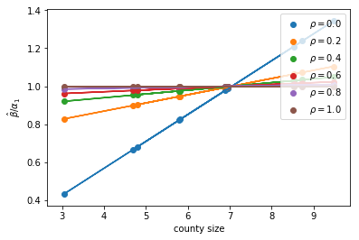

m01_simulation.m, a01_countyDma.do
We take the population size for each county in year 2000
The county-level per-capita ads exposure is determined by
a ~ Normal(0.004, 0.007^2)
Demand shock is determined by
eps ~ Normal(0, 0.4^2)
And per-capita conversion for each county is determined by
Log(qk) = -1.4 + 5 * a + eps
We simulate the data for 500 times and estimate the ads return. Here are the summary statistics for the estimation
specification mean std
__________________________ ____ _____
'county-ads,conv, true' 5.03 1.32
'dma-ads, dma-conv' 5.63 8.64
'dma-ads, county-conv' 1.57 3.65
' small counties (25%)' 0.26 7.31
' smallest county' 0.39 14.79
' border counties' 1.34 6.16
Note that according to our math,
b_est = a * B1 + B2
where B1 is affected by county size and correlation between ads exposures. (here cor=0) See the following picture

In our sample with real population sizes, the average B1 is 0.29 for all sample, 0.05 for counties with sizes in the first quartile, 0.25 for border counties.
a02_fixedEffects.do
Following Shapiro (2017), we take 744 party-DMA-border-year observations, and run the following regressions:
DV: log(share), dma-border
-----------------------------------------------------------------
(1) (2) (3) (4)
-----------------------------------------------------------------
Points/population, DMA 6.25*** 5.29*** 3.30*** 1.77**
(1.35) (0.83) (0.73) (0.73)
Ln(pop), border-DMA -0.01 0.80*** -0.10 -0.34***
(0.01) (0.09) (0.09) (0.13)
Party FE Yes Yes Yes Yes
Party-dma-border FE No Yes Yes Yes
Party-year FE No No Yes Yes
Party-border-year FE No No No Yes
-----------------------------------------------------------------
Observations 744 744 744 744
R-squared 0.28 0.97 0.98 1.00
-----------------------------------------------------------------
Clustered SE at Party-border
From the above table:
So cross-sectionally, DMA with higher market share receives fewer ads, whereas inter-temporally, years with higher market share receives higher ads. The ads effect for the border area is 1.5
However, if we replicate the above specification using border-county level observation, we have 2,540 party-border-county-year observations, and run the following set of regressions:
DV: log(share), county
-----------------------------------------------------------------
(1) (2) (3) (4)
-----------------------------------------------------------------
Points/population, DMA 6.21*** 7.99*** 3.11*** 0.20
(1.65) (1.40) (0.97) (0.48)
Ln population, county -0.01 -0.02 -0.02 -0.03**
(0.02) (0.01) (0.01) (0.01)
Party FE Yes Yes Yes Yes
Party-dma FE No Yes Yes Yes
Party-year FE No No Yes Yes
Party-border-year FE No No No Yes
-----------------------------------------------------------------
Observations 2540 2540 2540 2540
R-squared 0.31 0.63 0.65 0.75
-----------------------------------------------------------------
Clustered SE at Party-dma
The estimates are unchanged if control for county FE instead of DMA FE, as there is no variation in ads exposure within DMA across counties. Only improves data fit (R-squared)
DV: log(share), county
-----------------------------------------------------------------
(1) (2) (3) (4)
-----------------------------------------------------------------
Points/population, DMA 6.21*** 6.00*** 3.11*** 0.31
(1.65) (1.30) (0.96) (0.48)
Ln population, county -0.01 0.62*** -0.16** -0.30***
(0.02) (0.08) (0.07) (0.06)
Party FE Yes Yes Yes Yes
Party-county FE No Yes Yes Yes
Party-year FE No No Yes Yes
Party-border-year FE No No No Yes
-----------------------------------------------------------------
Observations 2540 2540 2540 2540
R-squared 0.31 0.97 0.98 0.99
-----------------------------------------------------------------
Clustered SE at Party-dma
One possible reason for the failure of border strategy in county-level specification is that there is no variation in ads exposure within border-DMA, but conversion varies, and this cannot be explained, lowering the explanatory power of ads exposure. This may be related to the measurement error argument
One thought:
Shapiro (2017), JPE
Dube, Lester and Reich (2010), ReStat
a03_battleground.do
We make use of the near-battleground dma-states whose ads exposure is mainly determined by the shock in the battleground states, but sharing the same DMA. (Huber and Arceneaux, 2017, hereafter HA)
We follow HA to identify 21 states as battleground states in 2000. We assume the same 21 states in 2004 election: AR, DE, FL, IL, IA, KY, LA, ME, MI, MN, MO, MT, NV, NH, NM, OH, OR, PA, TN, WA, and WI.
We identify those near-battle DMA-states as dma-states that are non-battlegound, but sharing the same DMA as battleground states. In total, we have 27 out of 139 DMA-states that are near-battle: 2-CT, 2-NJ, 3-NJ, 5-MA, 5-VT, 6-MD, 6-WV, 8-DC, 8-MD, 8-VA, 8-WV, 12-IN, 19-IN, 20-MA, 20-VT, 27-IN, 35-GA, 37-WV, 42-IN, 45-KS, 48-MS, 52-MS, 55-NE, 61-AL, 61-MS, 66-CO, 75-ID.
If we do our analysis in the dma-state level:
DV: log(share), dma-state
-----------------------------------------------------------------
All Near-battle
(1) (2) (3) (4)
-----------------------------------------------------------------
Points/population, DMA 6.53*** 2.41*** 2.12 2.20
(1.57) (0.73) (6.73) (2.74)
Ln pop, dma-state 0.01 0.08 0.02 0.10
(0.01) (0.12) (0.03) (0.40)
Party-year FE Yes Yes Yes Yes
Party-dma-state FE No Yes No Yes
-----------------------------------------------------------------
Observations 556 556 108 108
R-squared 0.18 0.99 0.04 0.99
-----------------------------------------------------------------
Clustered SE at Party-dma-state
Similar pattern exists in the county-level:
DV: log(share), county
-----------------------------------------------------------------
All Near-battle
(1) (2) (3) (4)
-----------------------------------------------------------------
Points/population, DMA 6.81*** 2.95*** -1.40 0.39
(1.72) (0.66) (4.20) (2.17)
Ln population, county -0.01 -0.02** -0.01 -0.01
(0.01) (0.01) (0.03) (0.02)
Party-year FE Yes Yes Yes Yes
Party-dma-state FE No Yes No Yes
-----------------------------------------------------------------
Observations 6428 6428 716 716
R-squared 0.29 0.63 0.15 0.60
-----------------------------------------------------------------
Clustered SE at Party-dma-state
Actually, the main result is driven from the battle-ground states:
DV: log(share), dma-state
-----------------------------------------------------------------
All Battle Near-Bat Far-Bat
(1) (2) (3) (4)
-----------------------------------------------------------------
Points/population, DMA 6.53*** 5.11*** 2.12 -7.35
(1.57) (1.49) (6.73) (11.09)
Ln pop, dma-state 0.01 0.01 0.02 -0.00
(0.01) (0.02) (0.03) (0.02)
Party-year FE Yes Yes Yes Yes
Party-dma-state FE Yes Yes Yes Yes
-----------------------------------------------------------------
Observations 556 260 108 188
R-squared 0.18 0.18 0.04 0.37
-----------------------------------------------------------------
Clustered SE at Party-dma-state
where Far-bat are dma-state that are non-battleground, and without any battleground states in the same dma.
a04_adsprice.do
We replicate Gordon and Hartmann (2017) using lagged CPM as the instruments for ads exposure. More specifically, we use party-year interact with lagged CPM. Here are the results.
DV: log(share)
-------------------------------------------------------------------------------------
DMA county
(1) (2) (3) (4) (5) (6)
OLS IV OLS IV OLS IV
-------------------------------------------------------------------------------------
Points/population, DMA 2.88*** 0.88 2.95*** 3.76* 2.93*** 3.08
(0.71) (1.72) (0.77) (1.97) (0.77) (1.93)
Ln population 0.10 0.08 -0.01 -0.01 -0.15** -0.15**
(0.19) (0.20) (0.01) (0.01) (0.06) (0.06)
Party-year FE Yes Yes Yes Yes Yes Yes
Party-dma FE Yes Yes Yes Yes Yes Yes
Party-county FE No No No No Yes Yes
-------------------------------------------------------------------------------------
Observations 300 300 6428 6428 6428 6428
R-squared 0.98 0.98 0.58 0.58 0.98 0.98
-------------------------------------------------------------------------------------
Clustered SE at Party-dma
There is null effect in the DMA-level estimates, but positive effect in the county-level estimates for IV.
m01_corrDemand.m
For each county c in DMA m, the log of sales per capita is
\[ Log q_{c} = \alpha \cdot Ads_{c} + e_c \]
where \( e = (e_1, e_2, ..., e_C) \sim N(0, \Omega) \), and \( \Omega_{ij} = \sigma_e^2 \cdot I(i = j) + \sigma_b^2 \cdot I(i-j-contiguous) + \sigma_m^2 \cdot I(i-j-same-dma) \), and Ads is determined by
\[ Ads_{c} = z_c + \frac{1}{N_m} \sum_{i \in m_c} e_i + 0.1 \cdot N(0,1) \]
In the simulation, we set \( \alpha = 1 \), the instruments \( z_c \sim N(0,1) \)
we implement five estimates: IV - using z as IV, OLS, OLS + dma-fe, border county OLS + border-FE, and dma-level-OLS, we simulate 50 times, and here is the summary of estimates
For the correlation structure:
\( (\sigma_e^2, \sigma_b^2, \sigma_m^2) = (5,0,0) \)
specification mean std
_____________ ____ ____
'iv' 1 0.06
'dmafe' 0.99 0.05
'ols' 1.19 0.05
'borderfe' 1.14 0.07
'dmareg' 1.55 0.23
\( (\sigma_e^2, \sigma_b^2, \sigma_m^2) = (5,0,1) \)
specification mean std
_____________ ____ ____
'iv' 1.02 0.07
'dmafe' 0.99 0.05
'ols' 1.56 0.04
'borderfe' 1.41 0.08
'dmareg' 1.85 0.11
\( (\sigma_e^2, \sigma_b^2, \sigma_m^2) = (5,1,0) \)
specification mean std
_____________ ____ ____
'iv' 1 0.06
'dmafe' 0.99 0.06
'ols' 1.32 0.05
'borderfe' 1.18 0.07
'dmareg' 1.72 0.18
\( (\sigma_e^2, \sigma_b^2, \sigma_m^2) = (5,1,1) \)
specification mean std
_____________ ____ ____
'iv' 1.03 0.08
'dmafe' 0.99 0.06
'ols' 1.6 0.04
'borderfe' 1.42 0.07
'dmareg' 1.88 0.11
From the above simulation, we see
m02_simu.m
For each county c in DMA m, the log of sales per capita is
\[ Log q_{c} = \alpha \cdot Ads_{c} + x_c + e_c \]
where \( x_c \sim N(0,1) \), \( e = (e_1, e_2, ..., e_C) \sim N(0, \Omega) \), and
\[ \Omega_{ij} = \sigma_e^2 \cdot I(i = j) + \sigma_{b0}^2 \cdot I(i-j-cont, m_i \neq m_j) + \sigma_{b1}^2 \cdot I(i-j-cont, m_i = m_j) + \sigma_m^2 \cdot I(m_i = m_j) \]
where \( m_i \) is the DMA for county-i, and the default value \( (\sigma_e^2, \sigma_{b0}^2, \sigma_{b1}^2, \sigma_m^2) = (5,0,0,0)\)
Ads viewership can be linear or exponential:
\[ Ads_{c} = \exp (\gamma_0 + \bar{e}_m + \gamma_2 \cdot \bar{x}_m + \gamma_3 \cdot N(0,1) ) \]
where \( \bar{x}_m = \frac{1}{N_m} \sum_{i \in m_c} x_i \), \( \bar{e}_m = \frac{1}{N_m} \sum_{i \in m_c} e_i \), the default is \( (\gamma_0, \gamma_2, \gamma_3) = (0,1,1) \), and linear ads viewership.
In the simulation, we set \( \alpha = 1 \), the instruments \( z_c = x_{-c} = \frac{1}{N_m - 1} \sum_{i \neq c} x_i \)
We compare the linear and exponential form of ads viewership, expecting to find that FE may fail in non-linear conversion case. However, this is not the case. It depends on whether the non-linear function can exagerate / shrink the within-county exogenous shocks in ads exposure.
We simulate the data using different magnitute of county-specific exogenous shocks (\( \gamma_3 \)), in linear case ads exposure, exagerating case \( \gamma_0 = 1 \), and shrinking case \( \gamma_0 = -1 \). We find that non-linearality can help in exagerating case, but harm in shrinking case.
The "strength" of IV comes from \( \gamma_2 \).

Note that
\[ \Omega_{ij} = \sigma_e^2 \cdot I(i = j) + \sigma_{b0}^2 \cdot I(i-j-cont, m_i \neq m_j) + \sigma_{b1}^2 \cdot I(i-j-cont, m_i = m_j) \]
where \( m_i \) is the DMA for county-i.
The identification assumption to support the DMA-border strategy is \( \sigma_{b0}^2 = \sigma_e^2, \sigma_{b1}^2 = 0 \), but the variance-covariance matrix is not positive definite.
We plot the OLS and Border FE estimates only in border counties, for \( \sigma_{b1}^2 = {0, 1} \), and different values of \( \sigma_{b0}^2 \). (\( \sigma_e^2 = 5 \))

a05_poliAll.do
We present all specifications for ads effects in the political ads content. They include cross-sectional regression, fixed-effect, border strategy, battleground strategy, and lagged ads price as IV (cross-market IV to be finished)
We exercises all specifications in various units of analysis if applicable. Each part below corresponds to one levels of anlaysis (unit of observation)
We follow Gordon and Hartmann (2013) to include the following controls: senate election, Gub. Incumb. Same, Distance, Rain, Rain_2004, Snow, Snow_2004, age 25--40, age 45--64, age 65+, unempoloyment, average salary. We take the average of values for control variables in analysis in geographics larger than county level.
DV: log(share)
-------------------------------------------------------
OLS IV
(1) (2) (3)
-------------------------------------------------------
Points/population, DMA 5.57*** 2.60*** 0.99
(1.68) (0.66) (2.11)
Ln population, dma -0.04 0.12 0.13
(0.04) (0.18) (0.19)
Controls Yes Yes Yes
Party-year FE Yes Yes Yes
Party-dma FE No Yes Yes
Lagged ads prices as IV No No Yes
-------------------------------------------------------
Observations 300 300 300
R-squared 0.29 0.99 0.99
First-stage excluded F 2.74
-------------------------------------------------------
Controls include Ln(population), and all controls in Gordon and Hartmann (2013).
Clustered SE at Party-dma, unit of obs: party-DMA-year
DV: log(share)
---------------------------------------------------------------------------------------------------------
OLS IV--lagged CPM IV--cross market IV -- both
(1) (2) (3) (4) (5) (6) (7) (8)
---------------------------------------------------------------------------------------------------------
Points/population, DMA 2.99*** 1.68** 2.17 -0.84 2.74 6.53*** 2.39 2.35*
(0.69) (0.66) (1.96) (1.77) (2.35) (1.91) (1.61) (1.37)
Ln(pop), border-DMA 0.07 -0.13 0.08 -0.12 0.08 -0.15 0.08 -0.13
(0.10) (0.11) (0.11) (0.12) (0.11) (0.11) (0.10) (0.11)
Control Yes Yes Yes Yes Yes Yes Yes Yes
Party-year FE Yes Yes Yes Yes Yes Yes Yes Yes
Party-dma-border FE Yes Yes Yes Yes Yes Yes Yes Yes
Party-border-year FE No Yes No Yes No Yes No Yes
Lagged ads prices as IV No No Yes Yes No No Yes Yes
Cross-market X as IV No No No No Yes Yes Yes Yes
---------------------------------------------------------------------------------------------------------
Observations 744 744 744 744 744 744 744 744
R-squared 0.99 1.00 0.99 1.00 0.99 1.00 0.99 1.00
First-stage excluded F 6.43 5.04 5.95 3.27 8.07 5.18
---------------------------------------------------------------------------------------------------------
Controls include Ln(population), and all controls in Gordon and Hartmann (2013).
Clustered SE at Party-border, unit of obs is party-DMA-border-year
DV: log(share)
-----------------------------------------------------------------
(1) (2) (3) (4)
OLS IV IV IV
-----------------------------------------------------------------
Points/population, DMA 2.52*** 2.88 0.53 1.38
(0.68) (2.59) (2.31) (1.79)
Ln pop, dma-state 0.30** 0.30** 0.30** 0.30**
(0.14) (0.14) (0.14) (0.14)
Controls Yes Yes Yes Yes
Party-year FE Yes Yes Yes Yes
Party-dma-state FE Yes Yes Yes Yes
Lagged ads prices as IV No Yes No Yes
Cross-market IV No No Yes Yes
-----------------------------------------------------------------
Observations 556 556 556 556
R-squared 0.99 0.99 0.99 0.99
First-stage excluded F 4.69 1.59 3.24
-----------------------------------------------------------------
Clustered SE at Party-dma-state, unit of obs: party-dma-state-year
DV: log(share)
-----------------------------------------------------------------
(1) (2) (3) (4)
OLS IV IV IV
-----------------------------------------------------------------
Points/population, DMA 2.09 1.13 1.22 1.61
(2.63) (3.38) (3.79) (3.35)
Ln pop, dma-state 0.44 0.30 0.32 0.37
(0.50) (0.57) (0.63) (0.57)
Controls Yes Yes Yes Yes
Party-year FE Yes Yes Yes Yes
Party-dma-state FE Yes Yes Yes Yes
Lagged ads prices as IV No Yes No Yes
Cross-market IV No No Yes Yes
-----------------------------------------------------------------
Observations 108 108 108 108
R-squared 0.99 0.99 0.99 0.99
First-stage excluded F 8.09 10.61 17.40
-----------------------------------------------------------------
Clustered SE at Party-dma-state, unit of obs: party-dma-state-year
DV: log(share)
-----------------------------------------------------------------
(1) (2) (3) (4)
OLS IV IV IV
-----------------------------------------------------------------
Points/population, DMA 2.87*** 0.23 5.57 3.04
(0.81) (3.26) (3.65) (2.37)
Ln population, county 0.00 0.00 0.00 0.00
(0.01) (0.01) (0.01) (0.01)
Controls Yes Yes Yes Yes
Party-year FE Yes Yes Yes Yes
Party-dma FE Yes Yes Yes Yes
Lagged ads prices as IV No Yes No Yes
Cross-market IV No No Yes Yes
-----------------------------------------------------------------
Observations 6428 6428 6428 6428
R-squared 0.62 0.62 0.62 0.62
First-stage excluded F 2.73 6.19 5.50
-----------------------------------------------------------------
Clustered SE at Party-dma, unit of obs: party-county-year
DV: log(share)
---------------------------------------------------------------------------------------------------------
OLS IV--lagged CPM IV--cross market IV -- both
(1) (2) (3) (4) (5) (6) (7) (8)
---------------------------------------------------------------------------------------------------------
Points/population, DMA 3.16*** 0.72 4.09* -1.98 4.28 3.92 3.53* 0.14
(0.75) (0.70) (2.11) (2.32) (3.14) (3.45) (1.98) (2.43)
Ln population, county 0.00 0.00 0.00 0.00 0.00 0.00 0.00 0.00
(0.01) (0.01) (0.01) (0.01) (0.01) (0.01) (0.01) (0.01)
Control Yes Yes Yes Yes Yes Yes Yes Yes
Party-year FE Yes Yes Yes Yes Yes Yes Yes Yes
Party-dma-border FE Yes Yes Yes Yes Yes Yes Yes Yes
Party-border-year FE No Yes No Yes No Yes No Yes
Lagged ads prices as IV No No Yes Yes No No Yes Yes
Cross-market X as IV No No No No Yes Yes Yes Yes
---------------------------------------------------------------------------------------------------------
Observations 2540 2540 2540 2540 2540 2540 2540 2540
R-squared 0.77 0.78 0.77 0.78 0.77 0.78 0.77 0.78
First-stage excluded F 8.51 4.96 15.05 4.23 20.08 7.12
---------------------------------------------------------------------------------------------------------
Controls include Ln(population), and all controls in Gordon and Hartmann (2013).
Clustered SE at Party-border, unit of obs is party-county-year
DV: log(share)
-----------------------------------------------------------------
(1) (2) (3) (4)
OLS IV IV IV
-----------------------------------------------------------------
Points/population, DMA 0.23 0.59 -1.98 -0.57
(2.69) (4.64) (3.24) (2.74)
Ln population, county -0.00 -0.00 -0.00 -0.00
(0.02) (0.02) (0.02) (0.02)
Controls Yes Yes Yes Yes
Party-year FE Yes Yes Yes Yes
Party-dma-state FE Yes Yes Yes Yes
Lagged ads prices as IV No Yes No Yes
Cross-market IV No No Yes Yes
-----------------------------------------------------------------
Observations 716 716 716 716
R-squared 0.63 0.63 0.63 0.63
First-stage excluded F 5.29 4.12 25.18
-----------------------------------------------------------------
Clustered SE at Party-dma-state, unit of obs: party-dma-state-year
a06_poliAllLnPoints.do
We present all specifications for ads effects in the political ads content. They include cross-sectional regression, fixed-effect, border strategy, battleground strategy, and lagged ads price as IV (cross-market IV to be finished)
We exercises all specifications in various units of analysis if applicable. Each part below corresponds to one levels of anlaysis (unit of observation)
We follow Gordon and Hartmann (2013) to include the following controls: senate election, Gub. Incumb. Same, Distance, Rain, Rain_2004, Snow, Snow_2004, age 25--40, age 45--64, age 65+, unempoloyment, average salary. We take the average of values for control variables in analysis in geographics larger than county level.
DV: log(share) - log(share0)
-------------------------------------------------------------
OLS IV
(1) (2) (3)
-------------------------------------------------------------
Ln(1+points/1000), DMA 0.102*** 0.061*** 0.036
(0.017) (0.010) (0.026)
Ln population, dma -0.105** -0.032 0.033
(0.043) (0.295) (0.315)
Controls Yes Yes Yes
Party-year FE Yes Yes Yes
Party-dma FE No Yes Yes
Lagged ads prices as IV No No Yes
-------------------------------------------------------------
Observations 300 300 300
R-squared 0.49 0.98 0.98
First-stage excluded F 3.224
First-stage partial R2 0.133
-------------------------------------------------------------
Controls include Ln(population), and all controls in Gordon and Hartmann (2013).
Clustered SE at Party-dma, unit of obs: party-DMA-year
DV: log(share) - log(share0)
-------------------------------------------------------------------------------------------------------------------------
OLS IV--lagged CPM IV--cross market IV -- both
(1) (2) (3) (4) (5) (6) (7) (8)
-------------------------------------------------------------------------------------------------------------------------
Ln(1+points/1000), DMA 0.044*** 0.033*** 0.050** 0.078** 0.007 0.035 0.024 0.041*
(0.009) (0.011) (0.025) (0.031) (0.023) (0.030) (0.020) (0.025)
Ln(pop), border-DMA 0.148 -0.196 0.143 -0.105 0.175 -0.192 0.162 -0.180
(0.150) (0.203) (0.152) (0.253) (0.141) (0.218) (0.143) (0.218)
Control Yes Yes Yes Yes Yes Yes Yes Yes
Party-year FE Yes Yes Yes Yes Yes Yes Yes Yes
Party-dma-border FE Yes Yes Yes Yes Yes Yes Yes Yes
Party-border-year FE No Yes No Yes No Yes No Yes
Lagged ads prices as IV No No Yes Yes No No Yes Yes
Cross-market X as IV No No No No Yes Yes Yes Yes
-------------------------------------------------------------------------------------------------------------------------
Observations 744 744 744 744 744 744 744 744
R-squared 0.983 0.996 0.983 0.996 0.982 0.996 0.983 0.996
First-stage excluded F 6.868 3.284 9.739 5.619 11.382 6.506
First-stage partial R2 0.122 0.098 0.151 0.229 0.249 0.313
-------------------------------------------------------------------------------------------------------------------------
DV: log(share) - log(share0)
-------------------------------------------------------------------------
(1) (2) (3) (4)
OLS IV IV IV
-------------------------------------------------------------------------
Ln(1+points/1000), DMA 0.044*** 0.035 -0.018 0.012
(0.011) (0.027) (0.026) (0.022)
Ln pop, dma-state 0.630*** 0.624*** 0.585*** 0.607***
(0.219) (0.217) (0.209) (0.210)
Controls Yes Yes Yes Yes
Party-year FE Yes Yes Yes Yes
Party-dma-state FE Yes Yes Yes Yes
Lagged ads prices as IV No Yes No Yes
Cross-market IV No No Yes Yes
-------------------------------------------------------------------------
Observations 556 556 556 556
R-squared 0.983 0.983 0.979 0.982
First-stage excluded F 3.510 3.988 3.888
First-stage partial R2 0.174 0.155 0.278
-------------------------------------------------------------------------
Clustered SE at Party-dma, unit of obs: party-dma-state-year
DV: log(share) - log(share0)
-------------------------------------------------------------------------
(1) (2) (3) (4)
OLS IV IV IV
-------------------------------------------------------------------------
Ln(1+points/1000), DMA 0.015 0.016 0.024 0.017
(0.017) (0.023) (0.024) (0.020)
Ln pop, dma-state 0.441 0.455 0.582 0.478
(0.503) (0.572) (0.585) (0.535)
Controls Yes Yes Yes Yes
Party-year FE Yes Yes Yes Yes
Party-dma-state FE Yes Yes Yes Yes
Lagged ads prices as IV No Yes No Yes
Cross-market IV No No Yes Yes
-------------------------------------------------------------------------
Observations 108 108 108 108
R-squared 0.991 0.991 0.991 0.991
First-stage excluded F 11.837 12.713 18.119
First-stage partial R2 0.652 0.758 0.830
-------------------------------------------------------------------------
Clustered SE at Party-dma, unit of obs: party-dma-state-year
DV: log(share) - log(share0)
-------------------------------------------------------------------------
(1) (2) (3) (4)
OLS IV IV IV
-------------------------------------------------------------------------
Ln(1+points/1000), DMA 0.054*** 0.061* 0.074** 0.062**
(0.014) (0.034) (0.037) (0.028)
Ln population, county -0.015 -0.015 -0.015 -0.015
(0.012) (0.012) (0.012) (0.012)
Controls Yes Yes Yes Yes
Party-year FE Yes Yes Yes Yes
Party-dma FE Yes Yes Yes Yes
Lagged ads prices as IV No Yes No Yes
Cross-market IV No No Yes Yes
-------------------------------------------------------------------------
Observations 6428 6428 6428 6428
R-squared 0.630 0.630 0.629 0.630
First-stage excluded F 2.872 10.670 11.080
First-stage partial R2 0.173 0.288 0.387
-------------------------------------------------------------------------
Clustered SE at Party-dma, unit of obs: party-county-year
DV: log(share) - log(share0)
-------------------------------------------------------------------------------------------------------------------------
OLS IV--lagged CPM IV--cross market IV -- both
(1) (2) (3) (4) (5) (6) (7) (8)
-------------------------------------------------------------------------------------------------------------------------
Ln(1+points/1000), DMA 0.057*** 0.041** 0.091*** 0.077** 0.107** 0.089** 0.093*** 0.073**
(0.014) (0.016) (0.029) (0.036) (0.048) (0.043) (0.035) (0.034)
Ln population, county -0.018 -0.019 -0.019 -0.019 -0.019 -0.019 -0.019 -0.019
(0.017) (0.017) (0.017) (0.017) (0.017) (0.017) (0.017) (0.017)
Control Yes Yes Yes Yes Yes Yes Yes Yes
Party-year FE Yes Yes Yes Yes Yes Yes Yes Yes
Party-dma-border FE Yes Yes Yes Yes Yes Yes Yes Yes
Party-border-year FE No Yes No Yes No Yes No Yes
Lagged ads prices as IV No No Yes Yes No No Yes Yes
Cross-market X as IV No No No No Yes Yes Yes Yes
-------------------------------------------------------------------------------------------------------------------------
Observations 2540 2540 2540 2540 2540 2540 2540 2540
R-squared 0.769 0.782 0.768 0.781 0.767 0.781 0.768 0.781
First-stage excluded F 8.810 3.483 21.980 13.574 17.991 16.564
First-stage partial R2 0.179 0.126 0.247 0.328 0.340 0.395
-------------------------------------------------------------------------------------------------------------------------
Controls include Ln(population), and all controls in Gordon and Hartmann (2013).
Clustered SE at Party-border, unit of obs is party-county-year
DV: log(share) - log(share0)
-------------------------------------------------------------------------
(1) (2) (3) (4)
OLS IV IV IV
-------------------------------------------------------------------------
Ln(1+points/1000), DMA -0.013 -0.000 -0.051 -0.020
(0.023) (0.055) (0.034) (0.024)
Ln population, county -0.020 -0.020 -0.020 -0.020
(0.017) (0.017) (0.017) (0.017)
Controls Yes Yes Yes Yes
Party-year FE Yes Yes Yes Yes
Party-dma-state FE Yes Yes Yes Yes
Lagged ads prices as IV No Yes No Yes
Cross-market IV No No Yes Yes
-------------------------------------------------------------------------
Observations 716 716 716 716
R-squared 0.639 0.639 0.638 0.639
First-stage excluded F 4.205 6.314 21.395
First-stage partial R2 0.241 0.479 0.808
-------------------------------------------------------------------------
Clustered SE at Party-dma, unit of obs: party-dma-state-year
DV: log(share) - log(share0)
-------------------------------------------------------------------------------------------------------------------------
OLS IV--lagged CPM IV--cross market IV -- both
(1) (2) (3) (4) (5) (6) (7) (8)
-------------------------------------------------------------------------------------------------------------------------
Ln(1+points/1000), DMA 0.051*** 0.059*** 0.042 0.097*** 0.067* 0.088** 0.053* 0.084***
(0.017) (0.012) (0.037) (0.032) (0.039) (0.036) (0.031) (0.027)
Ln population, county -0.024* -0.005 -0.024* -0.006 -0.025* -0.006 -0.024* -0.006
(0.014) (0.018) (0.014) (0.018) (0.014) (0.018) (0.014) (0.018)
Controls Yes Yes Yes Yes Yes Yes Yes Yes
Party-year FE Yes Yes Yes Yes Yes Yes Yes Yes
Party-dma FE Yes Yes Yes Yes Yes Yes Yes Yes
-------------------------------------------------------------------------------------------------------------------------
Observations 4260 2168 4260 2168 4260 2168 4260 2168
R-squared 0.640 0.686 0.640 0.685 0.640 0.686 0.640 0.686
First-stage excluded F 3.013 3.400 8.598 11.138 12.818 8.563
First-stage partial R2 0.217 0.186 0.293 0.282 0.429 0.369
-------------------------------------------------------------------------------------------------------------------------
(1), (3), (5), (7) are non-border counties, (2), (4), (6), (8) are border counties
Controls include Ln(population), and all controls in Gordon and Hartmann (2013).
Clustered SE at Party-dma, unit of obs: party-county-year
a06_poliAllLnPoints.do
We present all specifications for ads effects in the political ads content. They include cross-sectional regression, fixed-effect, border strategy, battleground strategy. In each specification, we include FE, IV using lagged price (interact with party-year), IV using cross-market (interact with party-year), IV for both.
We exercises all specifications in various units of analysis if applicable. Each part below corresponds to one levels of anlaysis (unit of observation)
We follow Gordon and Hartmann (2013) to include the following controls: senate election, Gub. Incumb. Same, Distance, Rain, Rain_2004, Snow, Snow_2004, age 25--40, age 45--64, age 65+, unempoloyment, average salary. We take the average of values for control variables in analysis in geographics larger than county level.
DMA analysis
DV: log(share) - log(share0)
-------------------------------------------------------------
OLS IV
(1) (2) (3)
-------------------------------------------------------------
Ln(1+points/1000), DMA 0.102*** 0.061*** 0.041**
(0.017) (0.010) (0.018)
Ln population, dma -0.105** -0.032 0.022
(0.043) (0.295) (0.303)
Controls Yes Yes Yes
Party-year FE Yes Yes Yes
Party-dma FE No Yes Yes
Lagged ads prices as IV No No Yes
-------------------------------------------------------------
Observations 300 300 300
R-squared 0.49 0.98 0.98
First-stage excluded F 1.886
First-stage partial R2 0.298
-------------------------------------------------------------
Controls include Ln(population), and all controls in Gordon and Hartmann (2013).
Clustered SE at Party-dma, unit of obs: party-DMA-year
DMA-border analysis
DV: log(share) - log(share0)
-------------------------------------------------------------------------------------------------------------------------
OLS IV--lagged CPM IV--cross market IV -- both
(1) (2) (3) (4) (5) (6) (7) (8)
-------------------------------------------------------------------------------------------------------------------------
Ln(1+points/1000), DMA 0.044*** 0.033*** 0.025* 0.019 0.040*** 0.030 0.038*** 0.028*
(0.009) (0.011) (0.015) (0.019) (0.015) (0.020) (0.012) (0.014)
Ln(pop), border-DMA 0.148 -0.196 0.161 -0.224 0.151 -0.203 0.152 -0.205
(0.150) (0.203) (0.144) (0.201) (0.148) (0.209) (0.147) (0.204)
Control Yes Yes Yes Yes Yes Yes Yes Yes
Party-year FE Yes Yes Yes Yes Yes Yes Yes Yes
Party-dma-border FE Yes Yes Yes Yes Yes Yes Yes Yes
Party-border-year FE No Yes No Yes No Yes No Yes
Lagged ads prices as IV No No Yes Yes No No Yes Yes
Cross-market X as IV No No No No Yes Yes Yes Yes
-------------------------------------------------------------------------------------------------------------------------
Observations 744 744 744 744 744 744 744 744
R-squared 0.983 0.996 0.983 0.996 0.983 0.996 0.983 0.996
First-stage excluded F 6.596 3.416 16.198 5.519 28.500 11.329
First-stage partial R2 0.320 0.290 0.394 0.407 0.604 0.646
-------------------------------------------------------------------------------------------------------------------------
Controls include Ln(population), and all controls in Gordon and Hartmann (2013).
Clustered SE at Party-border, unit of obs is party-DMA-border-year
DMA-state analysis
DV: log(share) - log(share0)
-------------------------------------------------------------------------
(1) (2) (3) (4)
OLS IV IV IV
-------------------------------------------------------------------------
Ln(1+points/1000), DMA 0.044*** 0.041** 0.010 0.031*
(0.011) (0.020) (0.020) (0.016)
Ln pop, dma-state 0.630*** 0.628*** 0.606*** 0.621***
(0.219) (0.216) (0.208) (0.213)
Controls Yes Yes Yes Yes
Party-year FE Yes Yes Yes Yes
Party-dma-state FE Yes Yes Yes Yes
Lagged ads prices as IV No Yes No Yes
Cross-market IV No No Yes Yes
-------------------------------------------------------------------------
Observations 556 556 556 556
R-squared 0.983 0.983 0.982 0.983
First-stage excluded F 2.779 3.780 5.772
First-stage partial R2 0.316 0.285 0.485
-------------------------------------------------------------------------
Clustered SE at Party-dma, unit of obs: party-dma-state-year
DMA-state analysis for near-battleground ones
N.A. More IV than observations
County analysis
DV: log(share) - log(share0)
-------------------------------------------------------------------------
(1) (2) (3) (4)
OLS IV IV IV
-------------------------------------------------------------------------
Ln(1+points/1000), DMA 0.054*** 0.052** 0.061** 0.057***
(0.014) (0.024) (0.024) (0.019)
Ln population, county -0.015 -0.015 -0.015 -0.015
(0.012) (0.012) (0.012) (0.012)
Controls Yes Yes Yes Yes
Party-year FE Yes Yes Yes Yes
Party-dma FE Yes Yes Yes Yes
Lagged ads prices as IV No Yes No Yes
Cross-market IV No No Yes Yes
-------------------------------------------------------------------------
Observations 6428 6428 6428 6428
R-squared 0.630 0.630 0.630 0.630
First-stage excluded F 2.602 9.887 22.374
First-stage partial R2 0.336 0.439 0.621
-------------------------------------------------------------------------
Clustered SE at Party-dma, unit of obs: party-county-year
Counties in DMA border
DV: log(share) - log(share0)
-------------------------------------------------------------------------------------------------------------------------
OLS IV--lagged CPM IV--cross market IV -- both
(1) (2) (3) (4) (5) (6) (7) (8)
-------------------------------------------------------------------------------------------------------------------------
Ln(1+points/1000), DMA 0.057*** 0.041** 0.052** 0.047* 0.078*** 0.067** 0.071*** 0.057**
(0.014) (0.016) (0.022) (0.026) (0.026) (0.030) (0.019) (0.022)
Ln population, county -0.018 -0.019 -0.018 -0.019 -0.019 -0.019 -0.018 -0.019
(0.017) (0.017) (0.017) (0.017) (0.017) (0.017) (0.017) (0.017)
Control Yes Yes Yes Yes Yes Yes Yes Yes
Party-year FE Yes Yes Yes Yes Yes Yes Yes Yes
Party-dma-border FE Yes Yes Yes Yes Yes Yes Yes Yes
Party-border-year FE No Yes No Yes No Yes No Yes
Lagged ads prices as IV No No Yes Yes No No Yes Yes
Cross-market X as IV No No No No Yes Yes Yes Yes
-------------------------------------------------------------------------------------------------------------------------
Observations 2540 2540 2540 2540 2540 2540 2540 2540
R-squared 0.769 0.782 0.769 0.782 0.769 0.781 0.769 0.781
First-stage excluded F 7.448 2.637 34.196 9.891 53.692 23.574
First-stage partial R2 0.371 0.330 0.458 0.443 0.652 0.642
-------------------------------------------------------------------------------------------------------------------------
Controls include Ln(population), and all controls in Gordon and Hartmann (2013).
Clustered SE at Party-border, unit of obs is party-county-year
counties in near-battleground states
DV: log(share) - log(share0)
-------------------------------------------------------------------------
(1) (2) (3) (4)
OLS IV IV IV
-------------------------------------------------------------------------
Ln(1+points/1000), DMA -0.013 -0.014 -0.009 -0.013
(0.023) (0.027) (0.025) (0.023)
Ln population, county -0.020 -0.020 -0.020 -0.020
(0.017) (0.017) (0.017) (0.017)
Controls Yes Yes Yes Yes
Party-year FE Yes Yes Yes Yes
Party-dma-state FE Yes Yes Yes Yes
Lagged ads prices as IV No Yes No Yes
Cross-market IV No No Yes Yes
-------------------------------------------------------------------------
Observations 716 716 716 716
R-squared 0.639 0.639 0.639 0.639
First-stage excluded F 202.051 . .
First-stage partial R2 0.791 0.905 1.000
-------------------------------------------------------------------------
Clustered SE at Party-dma, unit of obs: party-dma-state-year
Border/non-border counties
DV: log(share) - log(share0)
-------------------------------------------------------------------------------------------------------------------------
OLS IV--lagged CPM IV--cross market IV -- both
(1) (2) (3) (4) (5) (6) (7) (8)
-------------------------------------------------------------------------------------------------------------------------
Ln(1+points/1000), DMA 0.051*** 0.059*** 0.048* 0.060*** 0.046* 0.072*** 0.049** 0.070***
(0.017) (0.012) (0.028) (0.021) (0.026) (0.021) (0.022) (0.016)
Ln population, county -0.024* -0.005 -0.024* -0.005 -0.024* -0.006 -0.024* -0.006
(0.014) (0.018) (0.014) (0.018) (0.014) (0.018) (0.014) (0.018)
Controls Yes Yes Yes Yes Yes Yes Yes Yes
Party-year FE Yes Yes Yes Yes Yes Yes Yes Yes
Party-dma FE Yes Yes Yes Yes Yes Yes Yes Yes
-------------------------------------------------------------------------------------------------------------------------
Observations 4260 2168 4260 2168 4260 2168 4260 2168
R-squared 0.640 0.686 0.640 0.686 0.640 0.686 0.640 0.686
First-stage excluded F 2.855 3.275 13.957 16.625 35.220 24.855
First-stage partial R2 0.370 0.388 0.472 0.469 0.673 0.661
-------------------------------------------------------------------------------------------------------------------------
(1), (3), (5), (7) are non-border counties, (2), (4), (6), (8) are border counties
Controls include Ln(population), and all controls in Gordon and Hartmann (2013).
Clustered SE at Party-dma, unit of obs: party-county-year
We use all 6,428 counties, and predict the ads using lagged price (interacted with party-year), ads using cross-market IV (interacted with parti-year), plot the predicted value

The identification of the border strategies implies the effect should be more salient in smaller borders, i.e., borders as a smaller proportion of DMA.
We plot the population proportion of border-dma-year in dma-year for 372 border-dma-year.

For 93 borders, we define small border-dma if the population proportion in both years on both sides of the dma is smaller than 0.1. We have 35/93 "small borders". We run our border specification separately for couties in small borders and non-small borders. Here is the result.
DV: log(share) - log(share0)
-------------------------------------------------------------------------------------------------------------------------
OLS IV--lagged CPM IV--cross market IV -- both
(1) (2) (3) (4) (5) (6) (7) (8)
-------------------------------------------------------------------------------------------------------------------------
Ln(1+points/1000), DMA 0.007 0.084*** -0.012 0.089*** 0.012 0.111*** 0.013 0.093***
(0.016) (0.016) (0.022) (0.023) (0.023) (0.022) (0.019) (0.018)
Ln population, county -0.038 -0.018 -0.038 -0.018 -0.038 -0.018 -0.038 -0.018
(0.029) (0.018) (0.029) (0.018) (0.029) (0.018) (0.029) (0.018)
Controls Yes Yes Yes Yes Yes Yes Yes Yes
Party-year FE Yes Yes Yes Yes Yes Yes Yes Yes
Party-dma-border FE Yes Yes Yes Yes Yes Yes Yes Yes
-------------------------------------------------------------------------------------------------------------------------
Observations 852 1688 852 1688 852 1688 852 1688
R-squared 0.819 0.760 0.819 0.760 0.819 0.760 0.819 0.760
First-stage excluded F 4.248 3.612 9.456 36.930 137.441 123.962
First-stage partial R2 0.461 0.441 0.564 0.527 0.782 0.769
-------------------------------------------------------------------------------------------------------------------------
(1), (3), (5), (7) are small-border counties, (2), (4), (6), (8) are other border counties
Controls include Ln(population), and all controls in Gordon and Hartmann (2013).
Clustered SE at Party-dma, unit of obs: party-county-year
Without countroling for party-dma-border FE, but controlling for party-dma FE instead, we have
DV: log(share) - log(share0)
-------------------------------------------------------------------------------------------------------------------------
OLS IV--lagged CPM IV--cross market IV -- both
(1) (2) (3) (4) (5) (6) (7) (8)
-------------------------------------------------------------------------------------------------------------------------
Ln(1+points/1000), DMA 0.008 0.083*** -0.008 0.089*** 0.016 0.114*** 0.016 0.095***
(0.017) (0.016) (0.024) (0.023) (0.025) (0.022) (0.021) (0.018)
Ln population, county -0.046 -0.016 -0.046 -0.017 -0.046 -0.017 -0.046 -0.017
(0.034) (0.018) (0.034) (0.018) (0.034) (0.018) (0.034) (0.018)
Controls Yes Yes Yes Yes Yes Yes Yes Yes
Party-year FE Yes Yes Yes Yes Yes Yes Yes Yes
Party-dma FE Yes Yes Yes Yes Yes Yes Yes Yes
-------------------------------------------------------------------------------------------------------------------------
Observations 852 1688 852 1688 852 1688 852 1688
R-squared 0.768 0.703 0.768 0.703 0.768 0.702 0.768 0.703
First-stage excluded F 4.053 3.628 8.540 38.819 142.243 121.444
First-stage partial R2 0.461 0.441 0.567 0.525 0.780 0.767
-------------------------------------------------------------------------------------------------------------------------
(1), (3), (5), (7) are small-border counties, (2), (4), (6), (8) are other border counties
Controls include Ln(population), and all controls in Gordon and Hartmann (2013).
Clustered SE at Party-dma, unit of obs: party-county-year
We plot the population proportion of counties within DMA for 1,607 counties in two years as:

We label counties as "small counties" if its population in two years are smaller than 0.01 (520/1607).
DV: log(share) - log(share0)
-------------------------------------------------------------------------------------------------------------------------
OLS IV--lagged CPM IV--cross market IV -- both
(1) (2) (3) (4) (5) (6) (7) (8)
-------------------------------------------------------------------------------------------------------------------------
Ln(1+points/1000), DMA 0.050** 0.060*** 0.072** 0.040* 0.061* 0.065*** 0.057** 0.062***
(0.024) (0.012) (0.031) (0.022) (0.031) (0.020) (0.029) (0.014)
Ln population, county -0.201*** 0.031*** -0.201*** 0.032*** -0.201*** 0.031*** -0.201*** 0.031***
(0.032) (0.012) (0.032) (0.012) (0.032) (0.012) (0.032) (0.012)
Controls Yes Yes Yes Yes Yes Yes Yes Yes
Party-year FE Yes Yes Yes Yes Yes Yes Yes Yes
Party-dma FE Yes Yes Yes Yes Yes Yes Yes Yes
-------------------------------------------------------------------------------------------------------------------------
Observations 2080 4348 2080 4348 2080 4348 2080 4348
R-squared 0.709 0.657 0.709 0.656 0.709 0.657 0.709 0.657
First-stage excluded F 10.650 2.102 59.979 6.804 223.700 11.946
First-stage partial R2 0.670 0.216 0.691 0.347 0.853 0.551
-------------------------------------------------------------------------------------------------------------------------
(1), (3), (5), (7) are small counties, (2), (4), (6), (8) are big counties
Controls include Ln(population), and all controls in Gordon and Hartmann (2013).
Clustered SE at Party-dma, unit of obs: party-county-year
We find similar results for small counties / non-small countiers. We also find similar results for border counties / non-border counties (table "Border/non-border counties" above). However, we find heterogeneous effects for countties in small-border / counties in large-border.
Let's see the interaction of counties in small border, counties in non-small border, non-border counties, where
And the count of counties in each of six categories are:
----------------------------------------------------------------------
| big
bigborder | small counties big counties Total
----------------------+-----------------------------------------------
small-border counties | 90 106 196
big-border counties | 53 293 346
non-border counties | 377 688 1,065
Total | 520 1,087 1,607
----------------------------------------------------------------------
For OLS estimates:
OLS, DV: log(share) - log(share0)
-------------------------------------------------------------------------------------------------
small-border big-border non-border
(1) (2) (3) (4) (5) (6)
-------------------------------------------------------------------------------------------------
Ln(1+points/1000), DMA 0.012 0.042* 0.127** 0.075*** 0.040 0.057***
(0.021) (0.022) (0.050) (0.014) (0.027) (0.015)
Ln population, county -0.148*** 0.091* -0.332*** 0.012 -0.194*** 0.024*
(0.047) (0.050) (0.063) (0.026) (0.043) (0.014)
Controls Yes Yes Yes Yes Yes Yes
Party-year FE Yes Yes Yes Yes Yes Yes
Party-dma FE Yes Yes Yes Yes Yes Yes
-------------------------------------------------------------------------------------------------
Observations 360 424 212 1172 1508 2752
R-squared 0.847 0.809 0.892 0.731 0.726 0.674
-------------------------------------------------------------------------------------------------
(1), (3), (5), are small counties, (2), (4), (6) are small counties
Controls include Ln(population), and all controls in Gordon and Hartmann (2013).
Clustered SE at Party-dma, unit of obs: party-county-year
For IV using lagged CPM
IV using lagged CPM, DV: log(share) - log(share0)
-------------------------------------------------------------------------------------------------
small-border big-border non-border
(1) (2) (3) (4) (5) (6)
-------------------------------------------------------------------------------------------------
Ln(1+points/1000), DMA 0.028 0.036 0.128** 0.084*** 0.058* 0.031
(0.025) (0.028) (0.055) (0.022) (0.035) (0.026)
Ln population, county -0.149*** 0.091* -0.332*** 0.012 -0.195*** 0.024*
(0.047) (0.050) (0.063) (0.026) (0.043) (0.014)
Controls Yes Yes Yes Yes Yes Yes
Party-year FE Yes Yes Yes Yes Yes Yes
Party-dma FE Yes Yes Yes Yes Yes Yes
-------------------------------------------------------------------------------------------------
Observations 360 424 212 1172 1508 2752
R-squared 0.847 0.809 0.892 0.731 0.726 0.674
First-stage excluded F 21.357 5.438 11.515 4.074 21.252 2.093
First-stage partial R2 0.770 0.528 0.808 0.438 0.720 0.219
-------------------------------------------------------------------------------------------------
(1), (3), (5), are small counties, (2), (4), (6) are small counties
Controls include Ln(population), and all controls in Gordon and Hartmann (2013).
Clustered SE at Party-dma, unit of obs: party-county-year
When doing the analysis year-by-year, we have to drop party-dma FE as there is no variation in ads exposure. As a result, the standard FE estimates makes use of cross-sectional variation, thus should over-estimate the effect. Here is the FE estimates
DV: log(share) - log(share0)
-------------------------------------------------------------------------------------------------------------------------
OLS IV--lagged CPM IV--cross market IV -- both
(1) (2) (3) (4) (5) (6) (7) (8)
-------------------------------------------------------------------------------------------------------------------------
Ln(1+points/1000), DMA 0.070*** 0.119*** 0.057 0.147*** 0.125*** 0.147*** 0.110*** 0.140***
(0.018) (0.019) (0.073) (0.055) (0.035) (0.044) (0.031) (0.030)
Ln population, county -0.041** -0.030* -0.039 -0.034** -0.051** -0.034* -0.048** -0.033**
(0.020) (0.017) (0.024) (0.017) (0.021) (0.019) (0.020) (0.016)
Control Yes Yes Yes Yes Yes Yes Yes Yes
Party FE Yes Yes Yes Yes Yes Yes Yes Yes
-------------------------------------------------------------------------------------------------------------------------
Observations 3214 3214 3214 3214 3214 3214 3214 3214
R-squared 0.366 0.429 0.365 0.424 0.352 0.424 0.359 0.426
First-stage excluded F 1.395 1.335 13.833 3.002 9.984 4.463
First-stage partial R2 0.089 0.098 0.242 0.130 0.322 0.217
-------------------------------------------------------------------------------------------------------------------------
(1),(3),(5),(7) for year 2000, (2),(4),(6),(8) for year 2004
Controls include Ln(population), and all controls in Gordon and Hartmann (2013).
Clustered SE at Party-dma, unit of obs is party-county-year
If we do it by interacting with 2004 dummy, we have
DV: log(share) - log(share0)
-------------------------------------------------------------------------------------------------------------------------
OLS IV--lagged CPM IV--cross market IV -- both
(1) (2) (3) (4) (5) (6) (7) (8)
-------------------------------------------------------------------------------------------------------------------------
Ln(1+points/1000), DMA 0.053*** 0.023 0.052** 0.045 0.061** 0.042* 0.057*** 0.031
(0.014) (0.016) (0.024) (0.031) (0.024) (0.025) (0.019) (0.021)
Ln(1+points/1000) X 2004 0.035*** 0.010 0.027** 0.033***
(0.008) (0.024) (0.012) (0.011)
Ln population, county -0.015 -0.015 -0.015 -0.015 -0.015 -0.015 -0.015
(0.012) (0.012) (0.012) (0.012) (0.012) (0.012) (0.012)
Controls Yes Yes Yes Yes Yes Yes Yes Yes
Party-year FE Yes Yes Yes Yes Yes Yes Yes Yes
Party-dma FE Yes Yes Yes Yes Yes Yes Yes Yes
-------------------------------------------------------------------------------------------------------------------------
Observations 6428 6428 6428 6428 6428 6428 6428 6428
R-squared 0.629 0.631 0.630 0.630 0.630 0.631 0.630 0.631
First-stage excluded F 2.602 2.602 9.887 9.887 22.374 22.374
First-stage partial R2 0.336 0.336 0.439 0.439 0.621 0.621
-------------------------------------------------------------------------------------------------------------------------
Clustered SE at Party-dma, unit of obs: party-county-year
In the border strategy, we can control for party-border FE, and make use of the difference in ads across borders. The result is, surprising, close to zero.
DV: log(share) - log(share0)
-------------------------------------------------------------------------------------------------------------------------
OLS IV--lagged CPM IV--cross market IV -- both
(1) (2) (3) (4) (5) (6) (7) (8)
-------------------------------------------------------------------------------------------------------------------------
Ln(1+points/1000), DMA 0.008 0.009 -0.012 0.002 -0.055 0.020 -0.028 0.015
(0.020) (0.012) (0.039) (0.024) (0.041) (0.027) (0.034) (0.016)
Ln population, county -0.035** -0.027 -0.032* -0.027 -0.026 -0.028 -0.030* -0.028
(0.017) (0.020) (0.018) (0.020) (0.017) (0.021) (0.017) (0.020)
Control Yes Yes Yes Yes Yes Yes Yes Yes
Party-border FE Yes Yes Yes Yes Yes Yes Yes Yes
-------------------------------------------------------------------------------------------------------------------------
Observations 1270 1270 1270 1270 1270 1270 1270 1270
R-squared 0.695 0.713 0.694 0.712 0.688 0.712 0.693 0.712
First-stage excluded F 3.196 3.215 3.288 3.035 3.380 5.843
First-stage partial R2 0.212 0.230 0.246 0.249 0.336 0.497
-------------------------------------------------------------------------------------------------------------------------
(1),(3),(5),(7) for year 2000, (2),(4),(6),(8) for year 2004
Controls include Ln(population), and all controls in Gordon and Hartmann (2013).
Clustered SE at Party-border, unit of obs is party-county-border
Ads X 2004 for counties in borders, we have
DV: log(share) - log(share0)
-------------------------------------------------------------------------------------------------------------------------
OLS IV--lagged CPM IV--cross market IV -- both
(1) (2) (3) (4) (5) (6) (7) (8)
-------------------------------------------------------------------------------------------------------------------------
Ln(1+points/1000), DMA 0.041** 0.060** 0.047* 0.096*** 0.067** 0.135*** 0.057** 0.109***
(0.016) (0.023) (0.026) (0.032) (0.030) (0.038) (0.022) (0.031)
Ln(1+points/1000) X 2004 -0.017* -0.052*** -0.064*** -0.045***
(0.010) (0.016) (0.020) (0.015)
Ln population, county -0.019 -0.019 -0.019 -0.019 -0.019 -0.019 -0.019 -0.019
(0.017) (0.017) (0.017) (0.018) (0.017) (0.018) (0.017) (0.018)
Controls Yes Yes Yes Yes Yes Yes Yes Yes
Party-dma-border FE Yes Yes Yes Yes Yes Yes Yes Yes
Party-border-year FE Yes Yes Yes Yes Yes Yes Yes Yes
-------------------------------------------------------------------------------------------------------------------------
Observations 2540 2540 2540 2540 2540 2540 2540 2540
R-squared 0.782 0.782 0.782 0.781 0.781 0.781 0.781 0.781
First-stage excluded F 2.637 2.637 9.891 9.891 23.574 23.574
First-stage partial R2 0.330 0.330 0.443 0.443 0.642 0.642
-------------------------------------------------------------------------------------------------------------------------
Clustered SE at Party-border, unit of obs: party-county-border-year
Finally, if we use the change in demo as an IV (interact with party FE) in 2004, we have
DV: log(share) - log(share0)
-------------------------------------------------------------------------
OLS lag CPM crs mkt both
(1) (2) (3) (4)
-------------------------------------------------------------------------
Ln(1+points/1000), DMA 0.119*** 0.147*** 0.184*** 0.161***
(0.019) (0.055) (0.036) (0.036)
Ln population, county -0.030* -0.034** -0.040** -0.036**
(0.017) (0.017) (0.017) (0.017)
Controls Yes Yes Yes Yes
Party FE Yes Yes Yes Yes
-------------------------------------------------------------------------
Observations 3214 3214 3214 3214
R-squared 0.429 0.424 0.402 0.418
First-stage excluded F 1.335 5.585 4.520
First-stage partial R2 0.098 0.265 0.330
-------------------------------------------------------------------------
Clustered SE at Party-dma, unit of obs: party-county-year
We further control for the average of demographics in other counties within the state.
DV: log(share) - log(share0)
-------------------------------------------------------------------------------------------------------------------------
OLS IV--lagged CPM IV--cross market IV -- both
(1) (2) (3) (4) (5) (6) (7) (8)
-------------------------------------------------------------------------------------------------------------------------
Ln(1+points/1000), DMA 0.054*** 0.042*** 0.052** 0.030* 0.061** 0.031 0.057*** 0.038***
(0.014) (0.011) (0.024) (0.017) (0.024) (0.020) (0.019) (0.014)
Ln population, county -0.015 -0.015 -0.015 -0.015 -0.015 -0.015 -0.015 -0.015
(0.012) (0.011) (0.012) (0.011) (0.012) (0.011) (0.012) (0.011)
Crss-mkt-in-state demo No Yes No Yes No Yes No Yes
Controls Yes Yes Yes Yes Yes Yes Yes Yes
Party-year FE Yes Yes Yes Yes Yes Yes Yes Yes
Party-dma FE Yes Yes Yes Yes Yes Yes Yes Yes
-------------------------------------------------------------------------------------------------------------------------
Observations 6428 6428 6428 6428 6428 6428 6428 6428
R-squared 0.630 0.638 0.630 0.638 0.630 0.638 0.630 0.638
First-stage excluded F 2.602 3.313 9.887 12.924 22.374 18.281
First-stage partial R2 0.336 0.324 0.439 0.346 0.621 0.563
-------------------------------------------------------------------------------------------------------------------------
Clustered SE at Party-dma, unit of obs: party-county-year
a07_robustTSLS.do
The identification of beta in the second stage relies on the within-DMA-year variation of demographics. We follow George and Waldfogel (2003) and tabulate the total and between-DMA-year variation. We should look for demographics with largest difference. (1,607 counties, 75 DMA, 2 years)
-------------------------------------------------------------------------
count mean p5 p25 p50 p75 p95
-------------------------------------------------------------------------
sen 3214 0.67 0.00 0.00 1.00 1.00 1.00
govincumb 3214 0.55 0.00 0.00 1.00 1.00 1.00
dist 3214 9.49 0.00 7.29 9.26 12.66 16.95
rain 3214 0.24 0.00 0.00 0.08 0.32 0.94
snow 3214 0.05 0.00 0.00 0.00 0.00 0.21
age25 3214 0.36 0.27 0.33 0.36 0.39 0.45
age45 3214 0.33 0.27 0.31 0.33 0.34 0.38
age65 3214 0.19 0.11 0.16 0.18 0.22 0.28
unemploy 3214 4.85 2.50 3.60 4.60 5.80 8.20
empsal 3214 26.45 18.12 21.96 25.20 29.33 39.39
sen 150 0.74 0.00 0.44 1.00 1.00 1.00
govincumb 150 0.59 0.00 0.00 0.84 1.00 1.00
dist 150 10.39 0.00 7.83 10.63 13.91 16.95
rain 150 0.22 0.00 0.01 0.08 0.28 0.82
snow 150 0.03 0.00 0.00 0.00 0.00 0.16
age25 150 0.36 0.31 0.34 0.36 0.38 0.41
age45 150 0.32 0.30 0.31 0.32 0.34 0.35
age65 150 0.19 0.15 0.17 0.18 0.20 0.24
unemploy 150 4.96 2.97 3.90 4.86 5.87 7.23
empsal 150 27.53 22.10 24.56 26.89 28.99 36.68
-------------------------------------------------------------------------
And we plot some of the variation as


The zero-stage estimates of beta are
DV: ln(share) - ln(share0)
-------------------------------------------------------------
Repu Demo Both
(1) (2) (3)
-------------------------------------------------------------
sen -0.012 0.030 0.010
[0.729] [0.172] [0.600]
govincumb 0.037 0.026 0.008
[0.247] [0.433] [0.709]
dist 0.025 0.020* 0.029***
[0.117] [0.080] [0.005]
rain -0.040 0.021 -0.009
[0.265] [0.572] [0.773]
snow 0.007 -0.054 -0.023
[0.613] [0.421] [0.486]
age25 -0.674** -1.495*** -1.086***
[0.038] [0.000] [0.000]
age45 5.675*** 3.762*** 4.718***
[0.000] [0.000] [0.000]
age65 0.838** -0.672 0.083
[0.039] [0.262] [0.835]
unemploy -0.119*** 0.004 -0.058***
[0.000] [0.744] [0.000]
empsal -0.002 0.018*** 0.008***
[0.350] [0.000] [0.000]
Party-DMA-year FE Yes Yes Yes
-------------------------------------------------------------
Observations 3212 3212 6424
Adjusted R-squared 0.628 0.576 0.622
-------------------------------------------------------------
p-value in bracket
Clustered SE at Party-dma, unit of obs: party-fips-year
The first-stage rely on cross-DMA variation of ads exposure.
DV: ln(1 + points/1000)
-------------------------------------------------------------
Repu Demo Both
(1) (2) (3)
-------------------------------------------------------------
sen -0.267** -0.247* -0.263***
[0.019] [0.061] [0.002]
govincumb -0.253 -0.018 -0.147
[0.176] [0.921] [0.175]
dist 0.000 0.009 0.011
[.] [0.531] [0.439]
rain -0.650*** -0.416*** -0.526***
[0.000] [0.008] [0.000]
snow 0.736 0.601 0.639
[0.549] [0.569] [0.427]
age25 2.665 4.041 2.377
[0.575] [0.387] [0.430]
age45 -8.007 -4.579 -4.824
[0.301] [0.567] [0.369]
age65 17.503 8.424 11.380
[0.125] [0.469] [0.149]
unemploy 0.199** 0.109 0.173***
[0.028] [0.183] [0.002]
empsal -0.016 -0.036 -0.030
[0.702] [0.405] [0.316]
Party-DMA FE Yes Yes Yes
Party-year FE Yes Yes Yes
-------------------------------------------------------------
Observations 150 150 300
Adjusted R-squared 0.785 0.815 0.808
-------------------------------------------------------------
p-value in bracket
Clustered SE at Party-dma, unit of obs: party-dma-year
For each of candidate demographic, we run the following regressions:
Here are the results:
Demographics is sen
-------------------------------------------------------------------------
Ln(1+points/1000) Dif.Ln.Share
(1) (2) (3) (4)
-------------------------------------------------------------------------
Demographics -0.090 -0.002 0.013 0.014
[0.384] [0.715] [0.411] [0.395]
Demographics (-k) -0.049 -0.022
[0.713] [0.295]
Ln(1+points/1000), dma 0.449
[0.709]
Party-year FE Yes Yes Yes Yes
Party-dma FE Yes Yes Yes Yes
-------------------------------------------------------------------------
Observations 300 6428 6428 6428
R-squared 0.89 0.86 0.51 0.38
First-stage excluded F 0.136
First-stage partial R2 0.000
-------------------------------------------------------------------------
P-value in brackets. Clustered SE at Party-dma
Columns 1-3 are OLS, column 4 is 2SLS
Demographics is govincumb
-------------------------------------------------------------------------
Ln(1+points/1000) Dif.Ln.Share
(1) (2) (3) (4)
-------------------------------------------------------------------------
Demographics -0.209* -0.005 0.005 0.005
[0.052] [0.324] [0.837] [0.831]
Demographics (-k) -0.113 -0.009
[0.320] [0.740]
Ln(1+points/1000), dma 0.082
[0.738]
Party-year FE Yes Yes Yes Yes
Party-dma FE Yes Yes Yes Yes
-------------------------------------------------------------------------
Observations 300 6428 6428 6428
R-squared 0.89 0.86 0.51 0.51
First-stage excluded F 0.994
First-stage partial R2 0.002
-------------------------------------------------------------------------
P-value in brackets. Clustered SE at Party-dma
Columns 1-3 are OLS, column 4 is 2SLS
Demographics is dist
-------------------------------------------------------------------------
Ln(1+points/1000) Dif.Ln.Share
(1) (2) (3) (4)
-------------------------------------------------------------------------
Demographics -0.014 -0.001 0.028** 0.029**
[0.356] [0.216] [0.028] [0.026]
Demographics (-k) -0.026 -0.034***
[0.192] [0.006]
Ln(1+points/1000), dma 1.280
[0.272]
Party-year FE Yes Yes Yes Yes
Party-dma FE Yes Yes Yes Yes
-------------------------------------------------------------------------
Observations 300 6428 6428 6428
R-squared 0.89 0.86 0.51 -0.74
First-stage excluded F 1.716
First-stage partial R2 0.001
-------------------------------------------------------------------------
P-value in brackets. Clustered SE at Party-dma
Columns 1-3 are OLS, column 4 is 2SLS
Demographics is rain
-------------------------------------------------------------------------
Ln(1+points/1000) Dif.Ln.Share
(1) (2) (3) (4)
-------------------------------------------------------------------------
Demographics -0.461** -0.026*** -0.031 -0.030
[0.013] [0.001] [0.287] [0.325]
Demographics (-k) -0.574*** -0.023
[0.001] [0.501]
Ln(1+points/1000), dma 0.040
[0.526]
Party-year FE Yes Yes Yes Yes
Party-dma FE Yes Yes Yes Yes
-------------------------------------------------------------------------
Observations 300 6428 6428 6428
R-squared 0.90 0.87 0.51 0.51
First-stage excluded F 10.695
First-stage partial R2 0.035
-------------------------------------------------------------------------
P-value in brackets. Clustered SE at Party-dma
Columns 1-3 are OLS, column 4 is 2SLS
Demographics is snow
-------------------------------------------------------------------------
Ln(1+points/1000) Dif.Ln.Share
(1) (2) (3) (4)
-------------------------------------------------------------------------
Demographics -0.392*** -0.010 -0.039 -0.037
[0.002] [0.115] [0.396] [0.438]
Demographics (-k) -0.321* -0.058
[0.094] [0.381]
Ln(1+points/1000), dma 0.180
[0.230]
Party-year FE Yes Yes Yes Yes
Party-dma FE Yes Yes Yes Yes
-------------------------------------------------------------------------
Observations 300 6428 6428 6428
R-squared 0.89 0.86 0.51 0.50
First-stage excluded F 2.833
First-stage partial R2 0.007
-------------------------------------------------------------------------
P-value in brackets. Clustered SE at Party-dma
Columns 1-3 are OLS, column 4 is 2SLS
Demographics is age25
-------------------------------------------------------------------------
Ln(1+points/1000) Dif.Ln.Share
(1) (2) (3) (4)
-------------------------------------------------------------------------
Demographics -2.000 -1.228** -1.447*** -1.546***
[0.839] [0.027] [0.000] [0.000]
Demographics (-k) -26.460** 2.120
[0.042] [0.118]
Ln(1+points/1000), dma -0.080
[0.332]
Party-year FE Yes Yes Yes Yes
Party-dma FE Yes Yes Yes Yes
-------------------------------------------------------------------------
Observations 300 6428 6428 6428
R-squared 0.89 0.87 0.53 0.52
First-stage excluded F 4.207
First-stage partial R2 0.066
-------------------------------------------------------------------------
P-value in brackets. Clustered SE at Party-dma
Columns 1-3 are OLS, column 4 is 2SLS
Demographics is age45
-------------------------------------------------------------------------
Ln(1+points/1000) Dif.Ln.Share
(1) (2) (3) (4)
-------------------------------------------------------------------------
Demographics 31.748* 2.138*** 4.940*** 5.019***
[0.077] [0.004] [0.000] [0.000]
Demographics (-k) 46.120** -1.694
[0.011] [0.480]
Ln(1+points/1000), dma -0.037
[0.552]
Party-year FE Yes Yes Yes Yes
Party-dma FE Yes Yes Yes Yes
-------------------------------------------------------------------------
Observations 300 6428 6428 6428
R-squared 0.89 0.87 0.60 0.59
First-stage excluded F 6.696
First-stage partial R2 0.082
-------------------------------------------------------------------------
P-value in brackets. Clustered SE at Party-dma
Columns 1-3 are OLS, column 4 is 2SLS
Demographics is age65
-------------------------------------------------------------------------
Ln(1+points/1000) Dif.Ln.Share
(1) (2) (3) (4)
-------------------------------------------------------------------------
Demographics 8.771 0.186 1.523*** 1.523***
[0.536] [0.794] [0.000] [0.000]
Demographics (-k) 4.056 -0.015
[0.795] [0.995]
Ln(1+points/1000), dma -0.004
[0.995]
Party-year FE Yes Yes Yes Yes
Party-dma FE Yes Yes Yes Yes
-------------------------------------------------------------------------
Observations 300 6428 6428 6428
R-squared 0.89 0.86 0.53 0.53
First-stage excluded F 0.068
First-stage partial R2 0.001
-------------------------------------------------------------------------
P-value in brackets. Clustered SE at Party-dma
Columns 1-3 are OLS, column 4 is 2SLS
Demographics is unemploy
-------------------------------------------------------------------------
Ln(1+points/1000) Dif.Ln.Share
(1) (2) (3) (4)
-------------------------------------------------------------------------
Demographics 0.029 0.002 -0.056*** -0.059***
[0.753] [0.701] [0.000] [0.000]
Demographics (-k) 0.038 0.068***
[0.701] [0.000]
Ln(1+points/1000), dma 1.806
[0.695]
Party-year FE Yes Yes Yes Yes
Party-dma FE Yes Yes Yes Yes
-------------------------------------------------------------------------
Observations 300 6428 6428 6428
R-squared 0.89 0.86 0.53 -2.05
First-stage excluded F 0.148
First-stage partial R2 0.001
-------------------------------------------------------------------------
P-value in brackets. Clustered SE at Party-dma
Columns 1-3 are OLS, column 4 is 2SLS
Demographics is empsal
-------------------------------------------------------------------------
Ln(1+points/1000) Dif.Ln.Share
(1) (2) (3) (4)
-------------------------------------------------------------------------
Demographics 0.008 0.004 0.004* 0.003
[0.922] [0.203] [0.084] [0.164]
Demographics (-k) 0.078 0.022
[0.210] [0.181]
Ln(1+points/1000), dma 0.283
[0.314]
Party-year FE Yes Yes Yes Yes
Party-dma FE Yes Yes Yes Yes
-------------------------------------------------------------------------
Observations 300 6428 6428 6428
R-squared 0.89 0.86 0.51 0.47
First-stage excluded F 1.588
First-stage partial R2 0.004
-------------------------------------------------------------------------
P-value in brackets. Clustered SE at Party-dma
Columns 1-3 are OLS, column 4 is 2SLS
We examine the effect of various ways to construct IV: unweighted dma-average, population-weighted dma-average, excluding the focal county, and largest county. Here are the results
DV: log(share) - log(share0)
-----------------------------------------------------------------------------
(1) (2) (3) (4) (5)
-----------------------------------------------------------------------------
Ln(1+points/1000), dma 0.032 0.047** 0.032 0.048** 0.042**
(0.024) (0.023) (0.024) (0.023) (0.018)
Controls Yes Yes Yes Yes Yes
Party-year FE Yes Yes Yes Yes Yes
Party-county FE Yes Yes Yes Yes Yes
-----------------------------------------------------------------------------
Observations 6428 6428 6428 6428 6428
R-squared 0.973 0.973 0.973 0.973 0.973
First-stage excluded F 4.257 1.721 4.227 1.773 3.337
First-stage partial R2 0.156 0.107 0.154 0.107 0.191
-----------------------------------------------------------------------------
Clustered SE at Party-dma, unit of obs: party-county-year
For IV: (1) dma-average demo, (2) dma-pop-weighted avg demo, (3) dma-average excluded
(4) dma-pop-weighted avg excl., (5) largest county demo
We also interact the above IV with party and year fixed effects to get
DV: log(share) - log(share0)
-----------------------------------------------------------------------------
(1) (2) (3) (4) (5)
-----------------------------------------------------------------------------
Ln(1+points/1000), dma 0.041** 0.044** 0.041** 0.045** 0.039*
(0.020) (0.019) (0.020) (0.020) (0.020)
Controls Yes Yes Yes Yes Yes
Party-year FE Yes Yes Yes Yes Yes
Party-county FE Yes Yes Yes Yes Yes
-----------------------------------------------------------------------------
Observations 6428 6428 6428 6428 6428
R-squared 0.973 0.973 0.973 0.973 0.973
First-stage excluded F 9.873 36.005 9.748 35.550 32.640
First-stage partial R2 0.394 0.420 0.393 0.415 0.388
-----------------------------------------------------------------------------
Clustered SE at Party-dma, unit of obs: party-county-year
For IV: (1) dma-average demo, (2) dma-pop-weighted avg demo, (3) dma-average excluded
(4) dma-pop-weighted avg excl., (5) largest county demo
All IV interacted with party-year dummies
We examine carefully the determination of ads decision on the DMA level, which enables us to test the hypothesis of border strategy, and optimally pick our preferred instruments for the cross-market IV.
Border / non-border counties
For DMA l, the ads decision is determined as
$$ Ads_l = \gamma_0 \cdot \underset{B_c = 0}{\text{Avg }} x_c + \gamma_1 \cdot \underset{B_c = 1}{\text{Avg }} x_c + e_l $$
where \( B_c\) is the dummy for border counties. The assumption of the border strategy requires the unobserved characteristics in the border counties are irrelavent to the ads decision. We cannot observe the unobserd characteristics, so we examine whether the observed characteristics in the border counties are excluded from the ads decision, i.e., \( \gamma_1 = 0 \).
We plot the t-statistics for the vector of \( \gamma_0 \) and \( \gamma_1 \) separately, as well as the p-value for testing each vector equals to zero jointly.
For simple average:

For population-weighted average:

Small / large counties
Within each DMA, we divide the counties into three groups, based on their cumulative size. More specifically, for a county with population \( s \), it belongs to group 1 if \( \Pr(s^\prime \leq s) \leq 1/3 \) for all counties \( s^\prime \) in the same DMA (if a DMA has only one county, it belongs to group 3). Similarly, it belongs to group 2 if \( \Pr(s^\prime \leq s) \in (1/3, 2/3] \); it belongs to group 3 if \( \Pr(s^\prime \leq s) > 2/3 \). We regress the ads investment on the average of demographics in each groups as
$$ Ads_l = \gamma_1 \cdot \underset{G_c = 1}{\text{Avg }} x_c + \gamma_2 \cdot \underset{G_c = 2}{\text{Avg }} x_c + \gamma_3 \cdot \underset{G_c = 3}{\text{Avg }} x_c + e_l$$
we report the t-statistics for those \( \gamma \)s.


The idea of using cross-market IV is to make use of the "valid" variation of the ads exposure, which comes from the aggregate demographics in the DMA. Weather is known to the advertisers when making ads allocation decisions. However, the variation with respect to weather is also valid, and it is some types of local variation approach. We show that including weather upon the cross-market IV greatly improves the strength of the instruments in the political case.
The benchmark estimates are
DV: log(share) - log(share0)
-------------------------------------------------------------------------
(1) (2) (3) (4)
OLS IV Border S.Bord
-------------------------------------------------------------------------
Ln(Ads) 0.054*** 0.052** 0.041** 0.043**
(0.014) (0.024) (0.016) (0.017)
Controls Yes Yes Yes Yes
Party-year FE Yes Yes Yes Yes
Party-dma FE Yes Yes Yes Yes
Party-dma-border FE No No Yes Yes
Party-border-year FE No No Yes Yes
Lagged ads prices as IV No Yes No No
-------------------------------------------------------------------------
Observations 6428 6428 2540 1672
R-squared 0.630 0.630 0.782 0.778
First-stage excluded F 2.602
First-stage partial R2 0.336
-------------------------------------------------------------------------
Clustered SE at Party-dma, unit of obs: party-county-year
where controls include Ln(population), senate election, same incumbent, distance, proportion in age buckets (25--44, 45--64, 65+), pct of unemployment, average salary, rain, rain_2004, snow, snow_2004.
We now explore three types of IV approaches: supply-side IV (lagged price, reported in (2) above), demand-side IV (DMA-level aggregate of demographics), local-variational IV (DMA-level aggregate of rain and snow). All IVs are interacted with party and year FE.
DV: log(share) - log(share0)
-------------------------------------------------------------------------------------------------
(1) (2) (3) (4) (5) (6)
-------------------------------------------------------------------------------------------------
Ln(Ads) 0.058*** 0.069* 0.061** 0.056*** 0.048* 0.054***
(0.022) (0.041) (0.024) (0.018) (0.025) (0.019)
Controls Yes Yes Yes Yes Yes Yes
Party-year FE Yes Yes Yes Yes Yes Yes
Party-dma FE Yes Yes Yes Yes Yes Yes
IV:
DMA-demo Yes No Yes Yes No Yes
DMA-weather No Yes Yes No Yes Yes
Lagged ads prices No No No Yes Yes Yes
-------------------------------------------------------------------------------------------------
Observations 6428 6428 6428 6428 6428 6428
R-squared 0.630 0.630 0.630 0.630 0.630 0.630
First-stage excluded F 2.206 45.374 44.888 5.845 25.084 61.709
First-stage partial R2 0.330 0.257 0.486 0.526 0.456 0.642
-------------------------------------------------------------------------------------------------
Clustered SE at Party-dma, unit of obs: party-county-year
We see that the inclusion of DMA-weather greatly improves the first-stage F, making the instruments strong.
a11_firstStageRevisit.do
Wang et al. (2018) studies political ads using border strategies. They find that overall ads do not have significant effects, whereas negative ads has. Our political exercises are different from theirs in the following perspectives:
2) their unit of analysis is county-border-year, where their dependent variable is log of vote share i.e., log (v_demo / d_repub), in which case they ignore the existence of non-voting population (outside goods). Our unit of observation is party-county-border-year, where we acknowledge the existence of outside option.
3) They treat positive and negative ads separately, which we cannot do. 2.
In their paper, they compare the border counties and off-border counties in the following table:

In our data, we have
---------------------------------------------------------------------------
Off-Border On-border Diff. p-val
---------------------------------------------------------------------------
shareR 0.32 0.31 -0.01** 0.024
shareD 0.22 0.22 -0.01** 0.010
R GRP 1000 5.60 5.69 0.09 0.768
D GRP 1000 6.14 6.12 -0.02 0.945
shareRatio 1.71 1.67 -0.04 0.346
turnout 0.45 0.47 0.01*** 0.000
Voting Pop 1000 110.16 95.45 -14.71 0.188
rain 0.27 0.18 -0.10*** 0.000
snow 0.06 0.03 -0.03*** 0.003
age25 0.36 0.36 -0.01*** 0.001
age45 0.32 0.33 0.00*** 0.000
age65 0.19 0.19 0.01*** 0.001
unemploy 4.77 5.01 0.23*** 0.000
Salary 26.58 26.19 -0.39 0.132
numobs 2130.00 1084.00 0.00 .
---------------------------------------------------------------------------
a11_byPartyAnalysis.do
In the standard FE estimates, we find the ads return for Democrat is higher than the ads return for republican.
OLS, DV: log(share) - log(share0)
------------------------------------------------------------------------------
(1) (2) (3) (4)
ALL Repub Democ ALL
------------------------------------------------------------------------------
Ln(1+GRP/1K) 0.045*** 0.027*** 0.067***
(0.011) (0.010) (0.010)
Ln(1+GRP/1K), repub 0.025***
(0.010)
Ln(1+GRP/1K), demo 0.070***
(0.012)
Senate election 0.002 0.000 -0.002 0.000
(0.010) (0.013) (0.018) (0.010)
Same-party incumb gov -0.003 -0.000 -0.011 -0.003
(0.011) (0.015) (0.019) (0.011)
Distance to cand home state -0.005** 0.000 -0.004* -0.004*
(0.002) (.) (0.002) (0.002)
Rain (inches) -0.019 -0.030 -0.010 -0.020
(0.015) (0.018) (0.022) (0.014)
Snow (inches) -0.070*** -0.065*** -0.073*** -0.069***
(0.011) (0.015) (0.016) (0.010)
% Age 25--44 0.923*** 1.518*** 0.251 0.900***
(0.272) (0.261) (0.402) (0.265)
% Age 45--64 3.091*** 2.374** 3.944*** 3.129***
(0.741) (0.986) (1.032) (0.733)
% Age 65+ 3.298*** 2.430*** 4.148*** 3.295***
(0.736) (0.891) (1.060) (0.712)
Unemployment 0.007 0.002 0.014 0.008
(0.005) (0.005) (0.010) (0.006)
Avg salary (K) 0.001 -0.000 0.002 0.001
(0.002) (0.002) (0.003) (0.002)
Party-year FE Yes Yes Yes No
Party-county FE Yes Yes Yes No
------------------------------------------------------------------------------
Observations 6428 3214 3214 6428
R-squared 0.973 0.978 0.960 0.973
------------------------------------------------------------------------------
Clustered SE at Party-dma, unit of obs: party-county-year
However, if we apply the cross-market IV, we find positive return for Democratics, and negative return for Republicans. (in the previous application, we are generating many IV by interacting these IV with party and year FE. This might not be correct and will make things complicated).
IV, DV: log(share) - log(share0)
------------------------------------------------------------------------------------------
(1) (2) (3) (4) (5)
ALL Repub Democ ALL ALL
------------------------------------------------------------------------------------------
Ln(1+GRP/1K) 0.030 -0.011 0.106**
(0.025) (0.023) (0.044)
Ln(1+GRP/1K), repub 0.109 0.010
(0.154) (0.022)
Ln(1+GRP/1K), demo -0.096 0.074***
(0.198) (0.025)
Senate election 0.002 -0.003 -0.004 0.011 -0.001
(0.010) (0.013) (0.018) (0.018) (0.010)
Same-party incumb gov -0.004 -0.003 -0.007 -0.005 -0.003
(0.011) (0.016) (0.020) (0.015) (0.011)
Distance to cand home state -0.005** 0.000 -0.003 -0.009 -0.004*
(0.003) (.) (0.003) (0.006) (0.002)
Rain (inches) -0.025 -0.050*** 0.002 -0.024 -0.024*
(0.017) (0.017) (0.027) (0.030) (0.014)
Snow (inches) -0.071*** -0.068*** -0.068*** -0.078*** -0.069***
(0.011) (0.016) (0.022) (0.022) (0.010)
% Age 25--44 0.832*** 1.240*** 0.438 0.845*** 0.855***
(0.218) (0.313) (0.340) (0.291) (0.244)
% Age 45--64 3.277*** 2.930*** 3.549*** 3.291*** 3.219***
(0.728) (0.978) (1.128) (0.740) (0.689)
% Age 65+ 3.305*** 2.448** 4.129*** 3.327*** 3.296***
(0.765) (1.031) (1.011) (1.098) (0.721)
Unemployment 0.008 0.005 0.013 0.006 0.008
(0.006) (0.007) (0.011) (0.006) (0.006)
Avg salary (K) 0.001 -0.000 0.002 0.001 0.001
(0.002) (0.002) (0.003) (0.002) (0.002)
Party-year FE Yes Yes Yes Yes Yes
Party-county FE Yes Yes Yes Yes Yes
------------------------------------------------------------------------------------------
Observations 6428 3214 3214 6428 6428
R-squared 0.972 0.976 0.959 0.960 0.973
First-stage excluded F 4.314 3.702 2.467 1.805 1.760
First-stage partial R2 0.154 0.205 0.130 0.105 0.272
------------------------------------------------------------------------------------------
Clustered SE at Party-dma, unit of obs: party-county-year
Columns 1--4 use dma-average controls as IV, column 5 uses those IVs interact with party FE
An intuitive way to think about the IV with one binary instrument is the Wald statistics as
$$Wald = \frac{\bar{y}_1 - \bar{y}_0}{\bar{x}_1 - \bar{x}_0}$$
where \( \bar{y}_1 \) is the average of y given the instrument z = 1. Although our instruments, the DMA-average of demographics, is not binary, we can do a median split and report the Wald estimates one-by-one, to see their identification power.
Here is a summary statistics of the IV:
---------------------------------------------------------------------------
count mean p50 min max
---------------------------------------------------------------------------
IV: Senate election 6428 0.67 0.92 0.00 1.00
IV: Same-party incumb gov 6428 0.49 0.48 0.00 1.00
IV: Distance to cand home st~e 6428 8.99 8.10 0.00 26.31
IV: Rain (inches) 6428 0.24 0.11 0.00 2.08
IV: Snow (inches) 6428 0.05 0.00 0.00 1.98
IV: % Age 25--44 6428 0.36 0.36 0.28 0.43
IV: % Age 45--64 6428 0.33 0.32 0.27 0.36
IV: % Age 65+ 6428 0.19 0.18 0.14 0.31
IV: Unemployment 6428 4.85 4.66 2.21 9.98
IV: Avg salary (K) 6428 26.45 25.74 20.31 45.78
---------------------------------------------------------------------------
And the Wald statistics, after controlling for party-year and party-county FE, and all control variables as controls, are reported as follows:
y1 - y0 x1 - x0 Wald
(share) (ads)
-------------------- -------------------- --------------------
mean se mean se b se
----------------------------------------------------------------------------------------------
Senate election > p50 -0.020 (0.019) -0.606 (0.144) 0.033 (0.028)
Same-party incumb gov > p50 -0.005 (0.014) -0.020 (0.162) 0.237 (1.631)
Distance to cand home > p50 -0.078 (0.045) -0.364 (0.378) 0.214 (0.155)
Rain (inches) > p50 -0.035 (0.020) -0.299 (0.153) 0.117 (0.078)
Snow (inches) > p50 0.025 (0.025) -0.331 (0.153) -0.075 (0.095)
% Age 25--44 > p50 0.008 (0.020) -0.120 (0.194) -0.063 (0.230)
% Age 45--64 > p50 -0.031 (0.020) -0.139 (0.212) 0.225 (0.305)
% Age 65+ > p50 0.029 (0.024) -0.236 (0.214) -0.121 (0.183)
Unemployment > p50 -0.019 (0.018) -0.051 (0.194) 0.371 (1.320)
Avg salary (K) > p50 0.025 (0.018) 0.257 (0.179) 0.097 (0.076)
The instruments that seems to work:
Keeping only democratics, we have
y1 - y0 x1 - x0 Wald
(share) (ads)
-------------------- -------------------- --------------------
mean se mean se b se
----------------------------------------------------------------------------------------------
Senate election > p50 -0.030 (0.033) -0.464 (0.224) 0.064 (0.052)
Same-party incumb gov > p50 -0.037 (0.022) -0.389 (0.214) 0.095 (0.053)
Distance to cand home > p50 -0.017 (0.038) -0.155 (0.330) 0.110 (0.156)
Rain (inches) > p50 -0.022 (0.032) -0.295 (0.225) 0.074 (0.104)
Snow (inches) > p50 0.028 (0.042) -0.449 (0.250) -0.061 (0.117)
% Age 25--44 > p50 0.008 (0.032) -0.090 (0.266) -0.090 (0.572)
% Age 45--64 > p50 -0.063 (0.031) -0.306 (0.283) 0.207 (0.154)
% Age 65+ > p50 0.051 (0.041) -0.231 (0.245) -0.219 (0.379)
Unemployment > p50 -0.029 (0.029) -0.162 (0.259) 0.177 (0.226)
Avg salary (K) > p50 0.035 (0.029) 0.285 (0.246) 0.124 (0.100)
Instruments that seems to work:
We implement the border specification at 2,540 party-county-border-year lying on the border. For each dma-border, we calculate its population proportion as the proportion of population in the entire DMA. We define a border to be small if the population proportion on both sides in both years (4 numbers) are all smaller than 10%. For the 93 borders, 35 of them are small.
OLS, DV: log(share) - log(share0)
------------------------------------------------------------------------------
All borders Small borders
(1) (2) (3) (4)
------------------------------------------------------------------------------
Ln(1+GRP/1K) 0.046*** 0.032*** 0.008 0.013
(0.011) (0.011) (0.013) (0.010)
Senate election 0.001 0.007 0.004 0.013
(0.011) (0.013) (0.013) (0.021)
Same-party incumb gov -0.001 -0.004 -0.016 0.002
(0.011) (0.011) (0.020) (0.022)
Distance to cand home state -0.004 -0.010 -0.013*** 0.001
(0.003) (0.006) (0.003) (0.008)
Rain (inches) -0.017 0.000 -0.007 -0.031
(0.018) (0.027) (0.015) (0.027)
Snow (inches) -0.079* -0.065*** -0.090*** -0.059**
(0.046) (0.025) (0.032) (0.028)
% Age 25--44 1.163** 0.373 1.733** 1.084
(0.469) (0.399) (0.663) (0.759)
% Age 45--64 5.523*** 6.301*** 1.738** 2.976***
(1.286) (1.246) (0.814) (0.703)
% Age 65+ 3.325*** 3.080*** 3.678*** 2.662***
(0.907) (0.718) (0.803) (0.708)
Unemployment 0.002 -0.003 0.015 0.010
(0.006) (0.006) (0.010) (0.008)
Avg salary (K) -0.000 -0.001 -0.005** -0.005***
(0.002) (0.001) (0.002) (0.001)
Party-year FE Yes Yes Yes Yes
Party-county FE Yes Yes Yes Yes
Party-border-year FE No Yes No Yes
------------------------------------------------------------------------------
Observations 2540 2540 852 852
R-squared 0.971 0.982 0.982 0.989
------------------------------------------------------------------------------
Clustered SE at Party-dma and party-border, unit of obs: party-county-border-year
And similarly, if we estimate a party-specific parameter, we also have a higher ads effect for demographics.
OLS, DV: log(share) - log(share0)
------------------------------------------------------------------------------
All borders Small borders
(1) (2) (3) (4)
------------------------------------------------------------------------------
Ln(1+GRP/1K), repub 0.028** 0.021* -0.007 0.001
(0.012) (0.012) (0.014) (0.012)
Ln(1+GRP/1K), demo 0.076*** 0.046*** 0.028* 0.025**
(0.015) (0.016) (0.016) (0.011)
Senate election -0.002 0.006 0.002 0.013
(0.011) (0.012) (0.013) (0.020)
Same-party incumb gov -0.005 -0.003 -0.014 0.005
(0.011) (0.011) (0.020) (0.023)
Distance to cand home state -0.004 -0.009 -0.012*** 0.001
(0.003) (0.006) (0.003) (0.007)
Rain (inches) -0.017 0.001 -0.008 -0.031
(0.018) (0.026) (0.017) (0.027)
Snow (inches) -0.079* -0.066*** -0.090*** -0.060**
(0.045) (0.025) (0.032) (0.029)
% Age 25--44 1.126** 0.378 1.735** 1.082
(0.460) (0.402) (0.679) (0.765)
% Age 45--64 5.512*** 6.304*** 1.742** 2.987***
(1.280) (1.248) (0.829) (0.714)
% Age 65+ 3.336*** 3.086*** 3.665*** 2.659***
(0.896) (0.718) (0.797) (0.704)
Unemployment 0.001 -0.003 0.015 0.010
(0.006) (0.006) (0.009) (0.007)
Avg salary (K) -0.000 -0.001 -0.005** -0.005***
(0.002) (0.001) (0.002) (0.001)
Party-year FE Yes Yes Yes Yes
Party-county FE Yes Yes Yes Yes
Party-border-year FE No Yes No Yes
------------------------------------------------------------------------------
Observations 2540 2540 852 852
R-squared 0.971 0.982 0.982 0.989
------------------------------------------------------------------------------
Clustered SE at Party-dma and party-border, unit of obs: party-county-border-year
Remark for standard errors: SE should be clustered at the party-DMA and party-border simultaneously, using two-way clustering, as in Dube et al. (2010). However, in both Shapiro (2017), and Wang et al., (2018), they only cluster the SE at the level-DMA or DMA level. We are clustering in both ways in the draft.
a12_border-county-pair.do
In our main draft, we have the following results, where there are (spatially) heterogeneous effects in small borders (columns 3 and 4), where a small border is defined as a border with border-to-DMA population ratio below 10% for both sides of the border in both years.
DV: log(share) - log(share0)
----------------------------------------------------------------------------------------
(1) (2) (3) (4) (5) (6)
OLS IV Border S.Bord IV IV
----------------------------------------------------------------------------------------
Ln(Ads) 0.054*** 0.052** 0.041*** 0.009 0.061** 0.054***
(0.014) (0.024) (0.015) (0.020) (0.024) (0.019)
Controls Yes Yes Yes Yes Yes Yes
Party-year FE Yes Yes Yes Yes Yes Yes
Party-dma FE Yes Yes Yes Yes Yes Yes
Party-dma-border FE No No Yes Yes No No
Party-border-year FE No No Yes Yes No No
Lagged ads prices as~V No Yes No No No Yes
Cross-market IV No No No No Yes Yes
----------------------------------------------------------------------------------------
Observations 6428 6428 2540 852 6428 6428
R-squared 0.630 0.630 0.782 0.828 0.630 0.630
First-stage excluded F 2.602 44.885 61.266
First-stage partial R2 0.336 0.486 0.642
----------------------------------------------------------------------------------------
Clustered SE at Party-dma in 1,2,5,6, and at party-dma and party-border in 3 and 4.
We provide further evidence that the ads effects are spatially heterogeneous in small borders. To do so, we implement other specifications to counties in small borders as follows. We find that the effects are small in all specifications.
DV: log(share) - log(share0)
-------------------------------------------------------------------------
(1) (2) (3) (4)
OLS IV IV IV
-------------------------------------------------------------------------
Ln(Ads) 0.016 0.002 0.007 0.013
(0.017) (0.024) (0.025) (0.018)
Controls Yes Yes Yes Yes
Party-year FE Yes Yes Yes Yes
Party-dma FE Yes Yes Yes Yes
Lagged ads prices as IV No Yes No Yes
Cross-market IV No No Yes Yes
-------------------------------------------------------------------------
Observations 784 784 784 784
R-squared 0.775 0.775 0.775 0.775
First-stage excluded F 4.301 80.355 .
First-stage partial R2 0.452 0.626 0.922
-------------------------------------------------------------------------
Clustered SE at Party-dma, unit of obs: party-county-year
If we do the analysis on the county pairs across borders, where we replicate the specifications in Dube et al. (2010), we have
DV: log(share) - log(share0)
----------------------------------------------------------------------------------------
all county pairs max_pop_% < 0.03 max_pop_% < 0.01
(1) (2) (3) (4) (5) (6)
----------------------------------------------------------------------------------------
Ln(Ads) 0.047*** 0.030** 0.029** 0.031* 0.003 0.037**
(0.011) (0.012) (0.012) (0.018) (0.017) (0.015)
Controls Yes Yes Yes Yes Yes Yes
Party-county FE Yes Yes Yes Yes Yes Yes
Party-year FE Yes Yes Yes Yes Yes Yes
Party-pair-year FE No Yes No Yes No Yes
----------------------------------------------------------------------------------------
Observations 4364 4360 2136 2136 432 432
Adjusted R-squared 0.963 0.963 0.955 0.946 0.976 0.961
----------------------------------------------------------------------------------------
Clustered SE at Party-dma and party-border, unit of obs: party-county-pair-year
However, if we control for dma FE instead of county FE, the estimates goes away if we are doing only small pairs
DV: log(share) - log(share0)
----------------------------------------------------------------------------------------
all county pairs max_pop_% < 0.03 max_pop_% < 0.01
(1) (2) (3) (4) (5) (6)
----------------------------------------------------------------------------------------
Ln(Ads) 0.047*** 0.030** 0.024 0.020 0.015 0.002
(0.014) (0.012) (0.017) (0.019) (0.031) (0.018)
Controls Yes Yes Yes Yes Yes Yes
Party-dma FE Yes Yes Yes Yes Yes Yes
Party-year FE Yes Yes Yes Yes Yes Yes
Party-pair-year FE No Yes No Yes No Yes
----------------------------------------------------------------------------------------
Observations 4364 4360 2136 2136 432 432
Adjusted R-squared 0.661 0.784 0.697 0.805 0.800 0.869
----------------------------------------------------------------------------------------
Clustered SE at Party-dma and party-border, unit of obs: party-county-pair-year
Actually, the FE specification matters. In our raw analysis, if we control for party-county FE instead of party-DMA FE, we have
DV: log(share) - log(share0)
----------------------------------------------------------------------------------------
(1) (2) (3) (4) (5) (6)
OLS IV Border S.Bord IV IV
----------------------------------------------------------------------------------------
Ln(Ads) 0.051*** 0.047*** 0.039*** 0.027** 0.056*** 0.049***
(0.011) (0.018) (0.013) (0.013) (0.019) (0.015)
Controls Yes Yes Yes Yes Yes Yes
Party-year FE Yes Yes Yes Yes Yes Yes
Party-county FE Yes Yes Yes Yes Yes Yes
Party-dma-border FE No No Yes Yes No No
Party-border-year FE No No Yes Yes No No
Lagged ads prices as~V No Yes No No No Yes
Cross-market IV No No No No Yes Yes
----------------------------------------------------------------------------------------
Observations 6428 6428 2540 852 6428 6428
R-squared 0.973 0.973 0.982 0.990 0.973 0.973
First-stage excluded F 2.667 44.399 52.183
First-stage partial R2 0.326 0.444 0.613
----------------------------------------------------------------------------------------
If we do the analysis for border counties, replicating the specification in the first table (column 2 replicates column 3 in the first table), we have
DV: log(share) - log(share0)
------------------------------------------------------------------
(1) (2) (3) (4)
OLS OLS IV IV
------------------------------------------------------------------
Ln(Ads) 0.049*** 0.039*** 0.044** 0.039**
(0.011) (0.013) (0.018) (0.016)
Controls Yes Yes Yes Yes
Party-year FE Yes Yes Yes Yes
Party-border-county FE Yes Yes Yes Yes
Party-border-year FE No Yes Yes Yes
Cross-market IV No No Yes Yes
Lagged ads prices as~V No No No Yes
------------------------------------------------------------------
Observations 2540 2540 2540 2540
R-squared 0.972 0.982 0.982 0.982
First-stage excluded F . .
First-stage partial R2 . .
------------------------------------------------------------------
If we do the analysis for county pairs across borders, we have
DV: log(share) - log(share0)
------------------------------------------------------------------
(1) (2) (3) (4)
OLS OLS IV IV
------------------------------------------------------------------
Ln(Ads) 0.047*** 0.030** 0.029* 0.027*
(0.011) (0.012) (0.016) (0.015)
Controls Yes Yes Yes Yes
Party-year FE Yes Yes Yes Yes
Party-pair-county FE Yes Yes Yes Yes
Party-pair-year FE No Yes Yes Yes
Cross-market IV No No Yes Yes
Lagged ads prices as~V No No No Yes
------------------------------------------------------------------
Observations 4360 4360 4360 4360
R-squared 0.973 0.991 0.991 0.991
First-stage excluded F . .
First-stage partial R2 . .
------------------------------------------------------------------
clustered SE at party-DMA and party-border
a14_neighborEmploy.do
In order to calculate the average of employment / salary in neighborhood counties, we collect the unemployment rate from Bureau of Labor Statistics, salary level from County Business Patterns, and age brackets from census. For the focal counties in our analysis, we compare the old and new measure, and find:
Variable | Obs Mean Std. Dev. Min Max
-------------+---------------------------------------------------------
difunemp | 3,210 -.0162612 .1889488 -1.448727 1.267627
difempsal | 3,208 0 0 0 0
difage25 | 3,212 .0889151 .0234468 .0115563 .190429
difage45 | 3,212 .0784474 .0125027 -.0062564 .1981182
difage65 | 3,212 .0451913 .0120095 -.0753169 .1281569
with the summary statistics for the original variables as
Variable | Obs Mean Std. Dev. Min Max
-------------+---------------------------------------------------------
unemploy | 3,214 4.850716 1.782069 1.3 16.1
empsal | 3,214 26.45137 6.934291 11.54641 80.01283
age25 | 3,214 .3597499 .0543097 .1454704 .5809269
age45 | 3,214 .3250396 .0329678 .1598841 .5505804
age65 | 3,214 .188259 .0504075 .0395657 .4080881
So for the 3214 county-year in our main analysis, there are slight inconsistency in the unemployment, no changes in salaries, but somehow large changes in the age distribution.
We construct for the unemployment rate and annual income for contiguous counties, as well as for largest county (in terms of population) in the DMA. Here are their summary statistics
-----------------------------------------------------------------
count mean sd min max
-----------------------------------------------------------------
Unemploy 6428 4.85 1.78 1.30 16.10
Unemp-contiguous 6428 4.87 1.47 1.59 10.07
Unemp-largest 6428 4.42 1.44 1.60 10.50
Income 6428 26.45 6.93 11.55 80.01
Inc-contiguous 6428 26.47 5.06 16.26 61.45
Inc-largest 6428 36.12 6.94 23.89 76.82
-----------------------------------------------------------------
We control for these two measures in our implementation of Waldfogel IV, as:
DV: log(share) - log(share0)
------------------------------------------------------------------
(1) (2) (3) (4)
------------------------------------------------------------------
Ln(Ads) 0.060** 0.055** 0.048* 0.046*
(0.024) (0.024) (0.026) (0.026)
Unemploy -0.054*** -0.059*** -0.056*** -0.060***
(0.011) (0.010) (0.011) (0.010)
Income 0.008*** 0.007*** 0.008*** 0.007***
(0.002) (0.001) (0.002) (0.001)
Unemp-contiguous 0.019 0.014
(0.012) (0.013)
Inc-contiguous 0.007 0.007
(0.005) (0.005)
Unemp-largest 0.035*** 0.031**
(0.011) (0.013)
Inc-largest -0.005 -0.005
(0.005) (0.005)
Waldfogel IV Yes Yes Yes Yes
------------------------------------------------------------------
Observations 6428 6428 6428 6428
R-squared 0.629 0.631 0.630 0.632
First-stage excluded F 48.742 48.477 16.721 16.833
First-stage partial R2 0.484 0.482 0.445 0.445
------------------------------------------------------------------
Clustered SE at Party-dma, unit of obs: party-county-year
Other controls, party-year FE, party-DMA FE are included.
The estimation gets decreased, and more of so if we include unemployment rate in the largest county within the DMA, rather than the contiguous-county DMA. And first-stage F get decreased a lot, meaning that ads level is mostly explained by the largest unemployment level within DMA, which makes sense.
If we include both lagged price, and waldfogel IV, results are similar.
DV: log(share) - log(share0)
------------------------------------------------------------------
(1) (2) (3) (4)
------------------------------------------------------------------
Ln(Ads) 0.053*** 0.050*** 0.046** 0.044**
(0.019) (0.019) (0.020) (0.020)
Unemploy -0.054*** -0.059*** -0.056*** -0.060***
(0.011) (0.010) (0.011) (0.010)
Income 0.008*** 0.007*** 0.008*** 0.007***
(0.002) (0.001) (0.002) (0.001)
Unemp-contiguous 0.019 0.014
(0.012) (0.013)
Inc-contiguous 0.007 0.007
(0.005) (0.005)
Unemp-largest 0.036*** 0.032**
(0.011) (0.012)
Inc-largest -0.005 -0.005
(0.005) (0.005)
Waldfogel IV Yes Yes Yes Yes
Lagged ads prices as~V Yes Yes Yes Yes
------------------------------------------------------------------
Observations 6428 6428 6428 6428
R-squared 0.629 0.631 0.630 0.632
First-stage excluded F 57.060 57.386 20.870 20.901
First-stage partial R2 0.639 0.638 0.607 0.607
------------------------------------------------------------------
Clustered SE at Party-dma, unit of obs: party-county-year
Other controls, party-year FE, party-DMA FE are included.